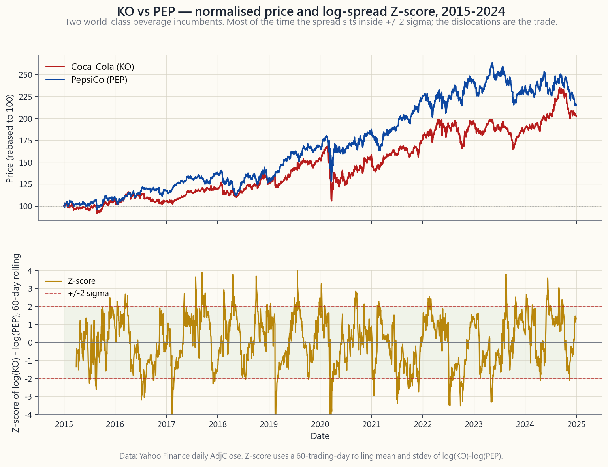

Week 14: Pair Trading — Relative Value, Mean Reversion, and the Simplest Equity-Hedge-Fund Strategy
1. Why This Is Important
Week 13 introduced long/short — the architecture. This week applies that architecture to its narrowest, most teachable form: **two stocks, one long, one short, equal dollar, sized to the spread between them.** Pair trading. The simplest equity-hedge-fund strategy in the book, and the cleanest place for a retail investor to learn the mechanics of relative value before scaling up to anything more complicated.
You need this lesson for four reasons.
learned.** Long Coke / short Pepsi at equal dollar is dollar- neutral by construction, roughly beta-neutral by virtue of the two stocks having near-identical sensitivities to the consumer- staples factor, and the entire P&L is the spread alpha — the difference between two close substitutes. There is nowhere for a directional view to hide. If the trade works, you traded the spread; if it doesn't, you didn't. Pair trading is the laboratory in which you find out whether you have any relative-value edge at all.
the made-up kind.** SOUL #5 names the structural alphas that actually compound after costs: liquidity, sector rotation, long- term trends, and buying what the passive machinery has abandoned. Pair trading sits inside the structural-alpha class because the pair trader is *supplying liquidity to the temporarily dislocated leg*. When PEP gaps down on a weak quarter and KO sits still, the pair trader who buys the dislocation is on the other side of forced sellers (mutual-fund redemptions, factor unwinds, index rebalances). The reversion of the spread back to its long-run relationship is the structural payment for that liquidity.
change problem.** SOUL #2 is the recurring bell of this course: regimes change, often without warning, and a strategy that worked for a decade can stop working in a quarter. Pair trading is the cleanest case study of that principle in retail-accessible form. Two stocks that have moved together for fifteen years can permanently de-couple — KO and PEP did, partially, after PEP's snack-foods business compounded faster than KO's beverage-only one. A pair trade that ignored that fundamental divergence and kept fading the widening spread back to its 10-year mean would have been wrong for six straight years. **Cointegration is a conditional, regime-dependent property, not a permanent one.**
study for crowded factor risk.** When too many quants run essentially the same pair-trading and stat-arb strategies, the pairs themselves become a factor — a factor that can unwind in correlated panic. Over four trading days in August 2007, a forced unwind by one or two large multi-strat funds drove a simultaneous reversal across the standard pair-trading factor, and most of the field lost two-to-four sigma on what should have been independent trades. The lesson — your alpha is only alpha when the people running the same strategy aren't all forced to exit at the same time — is one of the most important risk- management lessons in modern finance, and pair trading is where it was first learned.
This lesson sits in the opportunistic slot of SOUL #13's four- tranche structure and on the alpha end of SOUL #14's barbell. Most of your wealth is in the safety end (cash, Treasuries, gold, deep-ITM long-dated calls on names you'd own anyway). A small sleeve at the alpha end is where the pair-trading book lives — the pinwheel, in Horace's phrase, that spins when the rest of the portfolio is sitting still.
2. What You Need to Know
2.1 Relative Value — the Core Reframe
Long-only investing asks an absolute question: "Is KO cheap?" The answer requires a view on KO's earnings, multiple, growth, balance sheet, and the broader equity-risk premium. Get any of those wrong and the trade can be wrong even if KO is "cheap" by your model.
Pair trading replaces the absolute question with a relative one: "Is KO cheap relative to PEP?" The two beverage incumbents share a customer base, a regulatory regime, an exposure to the commodity-price cycle in sugar and aluminium, an exposure to the consumer-staples factor, an exposure to USD strength, and roughly the same multiple regime. A bad consumer-staples macro hits both; a sugar-tax scare hits both; a strong-dollar quarter hits both. What it does not hit symmetrically is the company-specific operational variance — KO's bottler restructuring, PEP's snack-foods margin, an FX shock specific to one country, a recall that lands on one brand. The spread isolates that company-specific variance from everything else.
The directional risk you eliminate is large. The 60/40 holder of 2,000 shares of KO has roughly half a million dollars exposed to "the consumer staples factor wakes up tomorrow and falls 10% on a risk-off day." The dollar-neutral pair trader long 1,000 KO and short 1,000 PEP has approximately zero dollars exposed to that factor. What the pair trader has, instead, is a $0 net but $200 gross book that is exposed to **the difference between two stories that look similar**. That difference is what they get paid for — or punished for, when the difference turns out to be permanent rather than mean-reverting.
This is why pair trading is the right teaching example for SOUL #5 and #14: it strips off market beta entirely and lets you see, in isolation, whether the relative-value bet has any signal at all.
2.2 Spread Construction and the Z-Score
Once you've picked a pair, you need a way to say how dislocated it is. The standard approach is the **rolling-Z-score on the log-spread**.
Construct it in three steps.
s_t = log(P^A_t) - log(P^B_t).
Working in log-space is the convention because it makes the
spread invariant to dollar normalisation and gives a multiplicative
interpretation: a constant s_t means a constant ratio of
prices, regardless of level.
60 trading days is a common starting point for daily data.
Call them mu_t and sigma_t.
z_t = (s_t - mu_t) / sigma_t. By
construction, in a stable cointegrated relationship, z_t is
approximately distributed mean-zero, unit-variance, with most
observations falling between -2 and +2.
The image below shows what this looks like for KO and PEP from 2015 through 2024 — the top panel is normalised prices, the bottom panel is the rolling-60-day Z-score with +/-2 sigma bands.

A pair trader looks at the bottom panel and asks: *when the line hits +2, do I trust that it'll come back to zero, and how long will it take?* The answer comes from cointegration, not correlation.
2.3 Correlation vs Cointegration — Why the Distinction Matters
Two random walks can be highly correlated and still diverge to infinity. That is the trap that kills naive pair trades.
- Correlation measures whether two return series move together
- Cointegration is stronger. Two price series are cointegrated
In practice, cointegration is tested with the Engle-Granger two-step procedure or a Johansen test on level series; the details are second-order. The intuition is the part you must internalise: **you can trade pairs only when the spread is mean-reverting, and correlation alone does not guarantee that.** The textbook counter-example is two assets in different secular trends — both might rally together for years (high correlation) while the gap between them widens monotonically (no cointegration). A pair trader who fades that widening gap loses every quarter for a decade.
A practical rule: before you trade a pair, plot the spread Z-score over a 5-to-10-year window and ask "does this thing visibly come home, repeatedly, after each excursion?" If yes, the cointegration test is mostly confirming what your eye already saw. If no, no amount of statistical machinery will rescue the trade.
2.4 Classic Pairs and Why They Work
Four canonical retail-accessible US-listed pairs, with the structural reason each cointegrates:
| Pair | Sector | Why the spread mean-reverts |
|---|---|---|
| KO / PEP | Consumer staples — beverages | Two near-identical global beverage incumbents; same customer base, same commodity cost structure, same defensive multiple regime. Spread breaks only when one company makes a strategic-mix change (PEP's snack-foods build-out is the classic example). |
| V / MA | Financials — payments duopoly | Visa and Mastercard are a regulatory duopoly with identical economics: card interchange, network effects, oligopolistic pricing power. Spread breaks only on company-specific litigation or geographic-mix exposure (China, Russia). |
| XOM / CVX | Energy — integrated supermajors | Both run integrated upstream-downstream books with similar reserves, similar geography, similar capital-allocation discipline. Spread breaks on idiosyncratic operational events — refinery accidents, project-cost overruns. |
| GLD / SLV | Precious metals ETFs | Gold and silver share a monetary-debasement story, but silver is half industrial, half monetary; the spread (the "gold-silver ratio") cycles between 50 and 90 with cyclical mean-reversion driven by the relative weight of those two demand drivers. |
The common feature is that the two legs share a structural driver and differ on a contained idiosyncratic dimension. The trade is paid for the contained dimension (the spread mean-reverts) and protected against the structural one (it nets out).
2.5 Entry/Exit Rules and a Worked Backtest
The textbook rule is **+/-2 sigma entry, 0 sigma exit, with a hard stop at +/-3 to +/-4**.
- When
zfalls below -2: the spread is two standard deviations
- When
zrises above +2: the spread is two standard deviations
- When
zcrosses zero: the spread is back at its rolling mean.
- If
zcontinues past +/-3 or +/-4 in the wrong direction: **cut
The chart below shows that ruleset applied to KO/PEP from 2015 through 2024. The top panel is the Z-score with up-arrows on long- spread entries and down-arrows on short-spread entries; the bottom panel is the cumulative log-spread P&L net of a 5 bp round-trip cost per side change.
![Two-panel pair-trading backtest of KO/PEP from 2015 through 2024. Top panel: 60-day Z-score of log(KO)-log(PEP) with horizontal lines at +/-2 sigma and at zero, with green up-arrows marking entries to long the spread (Z hits -2) and red down-arrows marking entries to short the spread (Z hits +2). Bottom panel: the cumulative P&L line of the +/-2 entry, 0 exit rule with 5 bp per-trade costs, showing many small wins and one or two regime breaks where the spread did not mean-revert and the trade was cut.](image/week14_pair_pnl.png)
What the chart teaches: **most pair trades are small wins, with occasional regime breaks that cost more than several wins put together.** This is exactly the shape of a structural-alpha return stream. It is also why pair trading is run as a *book of many pairs* rather than one — the law of large numbers is what makes the small-edge-per-pair model viable. A single-pair retail implementation is more education than alpha; the production version diversifies across thirty to fifty pairs simultaneously.
2.6 The 2007 Quant Quake — Crowding Risk Is Real
In the first week of August 2007, the standard equity-stat-arb book — roughly defined as "long the cheap leg of a pair, short the rich leg, across many pairs simultaneously" — lost between 4 and 12 sigma of its expected daily return for four straight days. The unwind cascaded across most of the major multi-strat hedge funds running similar models: AQR, Renaissance Equity Market-Neutral, Goldman Global Equity Opportunities. Some funds halved in a week.
The post-mortem is now well-documented. One of the largest multi- strats — most of the public reconstruction blames Goldman's quant book, though the precise actor is less important than the mechanism — was forced to deleverage suddenly, likely due to a margin call originating from an unrelated subprime-mortgage book. Closing the equity book required selling its long stat-arb leg (buying back the short side) en masse. Because every other major quant ran the same pairs from the same factor data, those same pairs simultaneously moved adversely against everyone else's book. As losses mounted, more funds were forced to deleverage, which moved the pairs further, which forced more funds to deleverage. **Standard pair-trading factor exposure had become a crowded trade — and crowded trades, when they unwind, do so together.**
The lesson is foundational and is the cleanest illustration in finance of SOUL #2's regime-change principle. **An alpha source remains alpha only as long as the population running it is small enough that no forced exit can simultaneously move all the trades against you.** The day too many people run the same strategy, the strategy itself becomes the risk factor. This is why modern stat arb runs a continuous "crowdedness factor" overlay — measuring how many other funds are likely in the same trade — and dials gross exposure down as crowdedness rises. The retail pair trader inherits the same discipline in miniature: do not over-size a canonical, well-known pair, because every other dollar in that trade is implicitly correlated with yours.
2.7 Where Pair Trading Sits in the Barbell
The barbell (SOUL #14) is most of your wealth in safety, a small sleeve in genuine asymmetric edge. **Pair trading lives at the edge end.** Sized correctly, a pair-trading sleeve runs at single- digit percentage of total portfolio, in dollar-neutral pairs where the gross exposure is two-to-three times sleeve size and the net is approximately zero. The sleeve's expected contribution to total portfolio return is small (3-8% annualised on the sleeve, which translates to 0.3-0.8% on a 10% sleeve allocation); the expected contribution to total portfolio Sharpe is potentially much larger because the sleeve's returns are roughly orthogonal to the long-only book.
This is the right way to think about pair trading for a retail investor: **not as a way to compound wealth, but as a way to reduce the variance of the wealth path.** It is a Sharpe-ratio play, not a return play. Anyone who promises you a pair-trading strategy with double-digit gross returns and low drawdowns is either over-fitted, levered, or selling a course.
3. Common Misconceptions
Misconception 1: "High correlation means a good pair."
Correlation measures co-movement of returns; cointegration measures mean-reversion of levels. High correlation with no cointegration is the canonical wide-and-keep-widening trap.
**Misconception 2: "If a pair has worked for ten years, it'll keep working."**
KO/PEP's relationship has shifted twice in the last twenty years on PEP's snack-foods build. Cointegration is conditional on the underlying business mix staying stable. When the mix changes, the spread re-prices to a new equilibrium, and the trader fading the old equilibrium loses for years. SOUL #2.
Misconception 3: "Z-score of +/-2 is a hard rule."
The thresholds are calibration choices, not laws. In a low-vol regime, +/-1.5 sigma fires more trades and may be the right cut; in a high-vol regime, +/-2.5 reduces false positives. Calibrate to the pair, the lookback, and the realised vol regime — not to the textbook number.
Misconception 4: "I'll just trade one pair to learn."
A single-pair book is not pair trading; it is one trade with high operational overhead. Real pair-trading strategies run thirty-plus pairs to make the law of large numbers work. The single-pair exercise is education; do not confuse it with alpha.
**Misconception 5: "Pair trading is risk-free because it's market- neutral."**
Pair trading has spread risk, regime-break risk, crowding risk (2007), borrow-cost risk on the short leg, and operational risk on margin and dividends. Net dollars zero is not net risk zero — LTCM was market-neutral and still lost 90%.
**Misconception 6: "If the spread keeps widening, my position gets bigger and the eventual reversion is more profitable."**
This is the martingale fallacy applied to pairs. As the spread widens, your mark-to-market loss grows, the broker raises your margin requirement, and the very mechanism that should make the trade more profitable in theory becomes the mechanism that forces you out before the reversion arrives. SOUL #12 — irrational longer than solvent — is the discipline-anchor here.
Misconception 7: "Borrow cost is small enough to ignore."
For mega-cap pairs (KO, PEP, V, MA) it usually is — single-digit basis points. For smaller-cap or specialty pairs it isn't, and the borrow rate can flip from 1% to 30% on a press release. Always check the borrow on the short leg before sizing the trade.
Misconception 8: "The 2007 quant quake is ancient history."
The same mechanism repeats. February 2018 had a vol-target factor unwind. March 2020 had a multi-strat de-leveraging week. Every few years, factor crowding produces another four-day correlated unwind. The quake was the cleanest case study, not the only one.
**Misconception 9: "If I use options to express the pair, I avoid the borrow problem."**
You also avoid the linear-spread P&L. An options-based pair has non-linear exposure to volatility and a defined-cost premium that eats into the spread alpha. It is not a free upgrade — it is a different trade with different greeks.
Misconception 10: "Pair trading is alpha, full stop."
Pair trading is alpha *as long as the spread cointegrates and the strategy isn't crowded*. Both conditions can fail. It is structural alpha conditional on regime and crowding — not a permanent free lunch.
**Misconception 11: "The strategy works because I picked the right pair."**
The strategy works because many pairs simultaneously revert slightly, and the small per-pair edge aggregates into a usable return stream at the book level. Single-pair returns are mostly noise; book-level returns are where the alpha is recognisable.
4. Q&A
**Q1: Should a retail investor with a $100k portfolio actually run a pair-trading book?**
A: Probably not as a serious P&L source. The minimum scale for a pair-trading book to be statistically meaningful is twenty-to- thirty pairs simultaneously, with operational discipline on borrow, margin, and dividends. Below that scale, you have a high-overhead toy. *Run one or two pairs in small size for education* — a few percent of your portfolio — and treat the output as tuition. If you want the alpha without the overhead, buy a market-neutral mutual fund or ETF and let someone else run the book.
Q2: What lookback window should I use for the Z-score?
A: 60 trading days is a sensible starting point for daily data; 40 is more responsive but noisier; 120 is more stable but slower to detect regime breaks. The right answer is a function of how fast the cointegration of your specific pair tends to reset. For mega-cap pairs (KO/PEP), 60 to 90 days. For more volatile pairs (small-cap, biotech), 30 to 60. Calibrate, do not adopt by default.
Q3: How big a position can I take in one pair?
A: A common institutional rule is 2-5% of the sleeve per pair, with a hard 10% cap. For a retail investor, on a $100k portfolio with a $10k pair-trading sleeve, that's $200-500 of gross exposure per pair (i.e., $200 long + $200 short = $400 gross at the small end). It feels small. It is small. Pair trading is a per-pair-tiny, many-pair-aggregated strategy by design.
Q4: When do I cut a pair and admit the cointegration broke?
A: When z extends past +/-3 to +/-4 and shows no signs of
returning, and you can identify a fundamental reason for the
break — a strategic-mix change in one of the companies, a
regulatory event that hits one and not the other, a takeover.
A spread that goes to -3.5 with no fundamental story is more
likely to revert than one that goes to -2.5 with a clear
story. Trade the fundamental, not just the Z-score.
Q5: How does pair trading interact with taxes (SOUL #15)?
A: Poorly, in a US taxable account. Pair trades have short holding periods on average (weeks to a few months), so realised gains are short-term — taxed at ordinary income rates, not long-term capital. The tax drag on a pair-trading book is one of the largest hidden costs. This is one reason institutional pair traders run inside tax-deferred wrappers (pension money, insurance separate accounts) where the structural tax disadvantage is absent.
Q6: How do dividends work for the short leg?
A: You owe them. If you are short PEP across the ex-dividend date, the dividend is debited from your account on pay-date and credited to the lender. There is no offset. For dividend-rich pairs (utilities, REITs), this is a meaningful drag and must be included in the per-trade cost calculation.
**Q7: What's the difference between pair trading and statistical arbitrage?**
A: Stat arb is pair trading scaled up: the same Z-score logic, but applied across hundreds-to-thousands of pairs simultaneously, with multi-factor decomposition (sector neutralisation, factor neutralisation), with optimised execution (VWAP/TWAP, dark pools), and held for shorter horizons (intraday to a few days). Pair trading is the educational unit; stat arb is the production implementation.
Q8: Why did the 2007 quant quake hit specifically pair traders?
A: Because the universe of "pairs" identified by a standard cointegration screen is largely the same across funds — the same sector pairs, the same factor neutralisations, the same optimisation. When one large player has to liquidate, they unwind the same trades that everyone else is on. Diversification in trade count does not help when the trades themselves are factor- correlated.
Q9: Can I use options instead of stock for the short leg?
A: Yes, and for retail it's often cleaner — buy a put on the expensive leg instead of shorting the stock. You avoid borrow, locate, and dividend obligations. You pick up theta decay and a volatility-dependent premium, and the linear-spread P&L is distorted into something more option-like. For a small retail sleeve where operational simplicity dominates, options-based pairs are a reasonable choice. SOUL #14's barbell logic naturally points here.
**Q10: How does pair trading fit with the four tranches (SOUL #13)?**
A: Pair trading is opportunistic — it sits in the third tranche alongside specific structural-alpha trades. It is not bedrock (too volatile, too operationally demanding), not core (it doesn't target a long-run risk premium), and not asymmetric speculation (no convex payoff). It earns its place by being roughly orthogonal to the rest of the portfolio.
Q11: What does a typical pair-trading sleeve P&L look like?
A: Many small wins (50-150 bps each on the gross), occasional regime breaks that cost 200-500 bps, and a flat-line during periods of compressed cross-sectional vol. Annualised return on the sleeve is typically in the 4-8% range gross, with realised vol of 5-10%. After fees and taxes for retail, considerably less. The chart shape is "many small steps up, occasional cliffs down," and the Sharpe ratio is the metric that matters — not the absolute return.
Q12: What should I read next if I want to actually build this?
A: Three things. (a) The original Gatev-Goetzmann-Rouwenhorst paper (2006) on pair trading — the academic baseline. (b) Khandani-Lo (2007), the post-mortem on the August 2007 quant quake. (c) The chapters in Lopez de Prado's *Advances in Financial Machine Learning* on cointegration and triple-barrier labelling. Read in that order — academic foundation, the war story, then the modern toolkit.
第14週：配對交易基礎
閱讀部分
a) 為何此課題重要
在第13週，我們學習了做多與沽空交易。我們了解到對沖基金如何結合多頭與空頭倉位，在降低市場風險的同時，從選股中獲利。配對交易在這個概念的基礎上加以提煉，成為量化金融中最優雅、最系統化的策略之一。
配對交易的重要性體現在以下幾個方面：
不受市場方向影響： 對任何投資者而言，最大的單一風險莫過於大盤崩盤。若你持有一個由股票組成的投資組合，而標普500指數下跌30%，幾乎所有資產都會下跌，無論質素高低。配對交易能在很大程度上消除這一風險。由於你同時持有一隻股票的多頭及一隻相關股票的空頭，市場整體波動會相互抵銷。當大市崩潰時，配對中的兩隻股票都會下跌，而你的淨倉位所受影響甚微。你的盈虧取決於兩隻股票之間的相對走勢，而非市場的方向。
量化基礎： 配對交易是最早、記錄最完整的量化策略之一。它於1980年代中期由Nunzio Tartaglia在摩根士丹利的量化研究團隊率先開創，此後在學術金融領域得到廣泛研究。配對交易所使用的統計工具，包括相關性、協整、均值回歸和Z分數，構成了許多更高級量化策略的基礎。學習配對交易為你進入系統化投資的世界提供了一個實用的切入點。
風險調整後回報： 由於配對交易對沖了市場風險，其回報往往比方向性策略更穩定、波動性更低。雖然你可能無法在牛市中獲取巨額收益，但你也能避免熊市中的慘烈回撤。對於注重風險調整後回報的投資者（每一位認真的投資者都應該如此），配對交易提供了極具吸引力的回報特徵。
可遷移的技能： 你在配對交易中學到的分析技術，可廣泛應用於金融領域的其他範疇。相關性分析有助你理解投資組合的多元化。協整分析應用於固定收益相對價值交易、貨幣配對交易及商品價差交易。均值回歸的概念貫穿整個量化金融，從統計套利到期權定價均有體現。掌握配對交易，你就擁有了一套遠超這一單一策略的工具箱。
職業相關性： 配對交易及其更為複雜的近親——統計套利，是量化對沖基金和自營交易公司最常用的策略之一。若你考慮從事量化金融方面的職業，理解配對交易是必不可少的基礎。即使在基本面投資領域，相對價值的概念——即股票A相對於股票B是否便宜，而非其絕對估值——也是一項核心的分析技能。
在本節課中，我們將介紹相對價值的概念框架、如何識別合適的配對、評估配對所用的統計工具、執行配對交易的操作機制，以及該策略的風險與局限性。
b) 你需要掌握的知識
相對價值的概念
大多數投資者以絕對值思考。「蘋果公司是否便宜？」「市場是否高估？」這些都是絕對價值問題。配對交易建立於相對價值思維之上：「蘋果公司相對於微軟而言是否便宜？」
絕對價值 vs. 相對價值：
絕對價值（傳統投資）：
+----------------------------------------------------------+
| 問題：「AAPL是否被低估？」 |
| 方法：分析AAPL的基本面、DCF估值、可比公司 |
| 風險：大市崩盤導致AAPL無論如何都會下跌 |
| 結果：即使你對AAPL的判斷是正確的，若整個市場 |
| 下跌，你仍有可能虧損 |
+----------------------------------------------------------+
相對價值（配對交易）：
+----------------------------------------------------------+
| 問題：「AAPL相對於MSFT而言是否便宜？」 |
| 方法：比較兩者的價格比率或價差走勢 |
| 風險：兩隻股票之間的關係出現破裂 |
| 結果：大市崩盤同時影響兩隻股票，因此 |
| 相對倉位基本不受影響 |
+----------------------------------------------------------+
直觀示例：
大市下跌20%：
絕對價值投資者：
單純持有AAPL多頭：AAPL跌18% -> 虧損：-18%
配對交易者：
AAPL多頭： AAPL跌18% -> 虧損：-18%
MSFT空頭： MSFT跌22% -> 盈利：+22%
淨值：+ 4%
配對交易者在崩盤中獲利，因為AAPL的跌幅
小於MSFT，印證了相對價值的判斷。
什麼是好的配對？
並非任意兩隻股票都能組成好的配對。理想的配對具備特定特徵，使策略更為可靠：
好配對的標準：
1. 相同板塊／行業
+----------------------------------------------------------+
| 同一行業的股票受到相同因素影響：法規、商品價格、 |
| 消費趨勢。這確保它們整體上同向運動，使策略 |
| 保持板塊中性。 |
| |
| 好：可口可樂（KO）與百事可樂（PEP） |
| 好：埃克森美孚（XOM）與雪佛龍（CVX） |
| 差：蘋果公司（AAPL）與埃克森美孚（XOM） |
+----------------------------------------------------------+
2. 高歷史相關性
+----------------------------------------------------------+
| 兩隻股票歷史上應有同向運動的記錄。 |
| 相關性衡量兩隻股票同向運動的程度。 |
| |
| 相關性範圍介乎 -1.0 至 +1.0： |
| +1.0 = 完全正相關（完全同步運動） |
| +0.0 = 無關聯 |
| -1.0 = 完全負相關（反向運動） |
| |
| 配對交易要求相關性 > 0.80 |
+----------------------------------------------------------+
3. 相似的商業模式與規模
+----------------------------------------------------------+
| 公司應在以下方面具有可比性： |
| - 市值（同為大型股，或同為中型股） |
| - 收入模式（同為訂閱制，或同為廣告模式） |
| - 地域覆蓋（同為本土，或同為全球） |
| - 增長狀況（同為成熟型，或同為高增長型） |
+----------------------------------------------------------+
4. 均值回歸的價差
+----------------------------------------------------------+
| 兩隻股票的價格比率或價差應傾向於向歷史均值回歸。 |
| 當出現偏離時，應會回復。這可通過統計方法加以驗證。 |
+----------------------------------------------------------+
5. 協整（黃金標準）
+----------------------------------------------------------+
| 協整是一種統計特性，意味著兩個序列共享 |
| 長期均衡關係。即使每隻股票單獨來看會隨機遊走， |
| 兩者之間的差值仍是平穩的（均值回歸的）。 |
| 這比相關性更為嚴格，也更為可靠。 |
+----------------------------------------------------------+
經典配對示例
知名交易配對：
飲料：
+-------------------+-------------------+
| 可口可樂（KO） | 百事可樂（PEP） |
| 全球飲料龍頭 | 全球飲料龍頭 |
| 利潤率相近 | 利潤率相近 |
| 相關性：~0.85 | 超過20年以上 |
+-------------------+-------------------+
能源：
+-------------------+-------------------+
| 埃克森美孚（XOM） | 雪佛龍（CVX） |
| 美國第一大石油公司| 美國第二大石油公司|
| 同樣受油價影響 | 同樣受油價影響 |
| 相關性：~0.90 | |
+-------------------+-------------------+
科技：
+-------------------+-------------------+
| Visa（V） | Mastercard（MA） |
| 支付網絡 | 支付網絡 |
| 雙寡頭 | 雙寡頭 |
| 增長相近 | 增長相近 |
| 相關性：~0.92 | |
+-------------------+-------------------+
金融：
+-------------------+-------------------+
| 高盛（GS） | 摩根士丹利（MS） |
| 投資銀行 | 投資銀行 |
| 業務組合相近 | 業務組合相近 |
| 相關性：~0.88 | |
+-------------------+-------------------+
家居改善：
+-------------------+-------------------+
| Home Depot（HD） | Lowe's（LOW） |
| 第一大家居改善商 | 第二大家居改善商 |
| 客群相同 | 客群相同 |
| 驅動因素相同 | 驅動因素相同 |
| 相關性：~0.87 | |
+-------------------+-------------------+
相關性 vs. 協整
這一區別至關重要，卻常常被誤解。許多初學者將相關性等同於配對交易的適用性，這是一個錯誤。
相關性 vs. 協整：
相關性：
衡量兩隻股票是否往相同方向運動。
兩隻股票可以高度相關，但並不一定均值回歸。
高相關性但無協整的例子：
股價
$200 | 股票A /
| / / 股票B
$150 | / /
| / /
$100 | / /
| / /
$ 50 | / /
|/ /
+--|------|------|------|-----> 時間
第1年 第2年 第3年 第4年
兩者同步上升（相關性 = 0.95）。
但兩者之間的差距持續擴大。
價差並未回歸均值。
不適合配對交易。
協整：
衡量兩隻股票之間的價差是否穩定。
價差可能暫時偏離，但始終會回復。
協整配對的例子：
股價
$160 | A A A A
| / \ B / \ / \ B / \
$140 | / \/\ / \/ \ / \ / \
| / B \/B B\/ \/ B
$120 |/ \
+--|------|------|------|------|-----> 時間
第1年 第2年 第3年 第4年 第5年
股票A與B相互交織運動。
有時A領先，有時B領先。
但兩者之間的價差保持穩定。
當出現偏離時，便會收斂回來。
適合配對交易。
核心要點：
+----------------------------------------------------------+
| 相關性告訴你兩隻股票是否同向運動。協整則告訴 |
| 你兩者之間的距離是否穩定。在配對交易中， |
| 協整才是關鍵所在。 |
| |
| 比喻：兩隻由同一主人牽引的狗。 |
| 兩隻狗可能各自左右亂跑（每一步並非完全相關）， |
| 但狗繩讓它們不會距離太遠。狗繩就是協整。 |
+----------------------------------------------------------+
協整檢驗
配對交易中的標準協整檢驗是擴展Dickey-Fuller檢驗（ADF檢驗），也稱為Engle-Granger兩步法：
協整檢驗——兩步驟流程：
第一步：計算價差（或比率）
+----------------------------------------------------------+
| 價差 = 股價_A - (貝塔 x 股價_B) - 截距 |
| |
| 其中貝塔為線性回歸中的對沖比率： |
| 股價_A = 截距 + 貝塔 x 股價_B + 殘差 |
| |
| 殘差即為價差。 |
+----------------------------------------------------------+
第二步：檢驗價差是否平穩（ADF檢驗）
+----------------------------------------------------------+
| 對殘差進行擴展Dickey-Fuller檢驗。 |
| 若p值 < 0.05，則價差為平穩序列 |
| （均值回歸），即配對具有協整關係。 |
| |
| H0（原假設）：價差存在單位根（非平穩） |
| H1（備擇假設）：價差為平穩序列（均值回歸） |
| |
| 若拒絕H0（p < 0.05），則配對具有協整關係。 |
+----------------------------------------------------------+
實際解讀：
ADF檢驗結果 配對交易適用性
================== ========================
p值 < 0.01 協整強。優質配對。
p值 0.01 - 0.05 協整中等。良好配對。
p值 0.05 - 0.10 協整弱。謹慎使用。
p值 > 0.10 無協整。避免此配對。
示例：
運行回歸：KO股價 = 0.52 + 1.12 x PEP股價 + 殘差
對殘差進行ADF檢驗：
檢驗統計量：-3.42
p值：0.009
結論：p值 < 0.01，KO與PEP具有協整關係。
兩者之間的價差具有均值回歸特性。
此配對可用於交易。
價格比率與價差
衡量配對股票之間關係的方法主要有兩種：
配對衡量的兩種方法：
1. 價格比率法
+----------------------------------------------------------+
| 比率 = 股價_A / 股價_B |
| |
| 例子：KO報$60，PEP報$170 |
| 比率 = 60 / 170 = 0.353 |
| |
| 若歷史平均比率為0.370，則KO相對於PEP偏便宜 |
| （比率低於平均值）。 |
| 交易：買入KO，沽空PEP。 |
+----------------------------------------------------------+
價格比率走勢圖（KO/PEP）：
0.42 |
| *
0.40 |
|
0.38 | *
|
0.36 |------------均值--------------- <- 歷史均值
| *
0.34 |
| *
0.32 | * <- 當前（低於均值）
|
0.30 +--|----|----|----|----|----|----|-->
一 二 三 四 五 六 七月
訊號：比率低於均值 -> 買入KO，沽空PEP
2. 價差法（使用對沖比率）
+----------------------------------------------------------+
| 價差 = 股價_A - (對沖比率 x 股價_B) |
| |
| 由回歸得出對沖比率：貝塔 = 0.35 |
| 價差 = KO - (0.35 x PEP) = 60 - (0.35 x 170) = 0.50 |
| |
| 若均值價差為2.00，當前價差0.50低於平均水平。 |
| KO相對於PEP偏便宜。 |
| 交易：買入KO，沽空PEP。 |
+----------------------------------------------------------+
選用哪種方法？
+----------------------------------------------------------+
| 比率法：較簡單、直觀，適用於穩定配對。 |
| 價差法：更嚴謹，考慮了對沖比率，更適用於 |
| 波動性不同的配對。 |
| 大多數量化交易者使用價差法。 |
+----------------------------------------------------------+
Z分數：交易訊號
Z分數將價差標準化，使你能夠在不同配對和時間段之間比較偏差程度：
Z分數計算：
Z分數 = （當前價差 - 均值價差）/ 價差標準差
例子：
當前價差： 0.50
歷史均值： 2.00
標準差： 0.80
Z分數 = (0.50 - 2.00) / 0.80 = -1.875
解讀：
價差低於其均值1.875個標準差。
這意味著KO相對於PEP異常便宜。
Z分數交易訊號：
Z分數
+3.0 | <- 極端（沽空A，買入B）
|
+2.0 |-------- 賣出訊號 -------- <- 入市沽空A，買入B
|
+1.0 |
|
0.0 |=============== 均值 =============== <- 公平價值
|
-1.0 |
|
-2.0 |-------- 買入訊號 --------- <- 入市買入A，沽空B
|
-3.0 | <- 極端（買入A，沽空B）
標準交易規則：
+----------------------------------------------------------+
| 入市訊號： |
| |
| Z分數 < -2.0：買入股票A，沽空股票B |
| （A相對於B偏便宜） |
| |
| Z分數 > +2.0：沽空股票A，買入股票B |
| （A相對於B偏貴） |
| |
| 離場訊號： |
| |
| Z分數回歸0：平掉兩個倉位 |
| （價差已回歸均值） |
| |
| 止蝕： |
| |
| Z分數超過+/- 4.0：平掉倉位，承受損失 |
| （配對關係可能已破裂） |
+----------------------------------------------------------+
配對交易的運作方式：完整示例
配對交易操作流程：可口可樂（KO）vs. 百事可樂（PEP）
設定（基於歷史分析）：
+----------------------------------------------------------+
| 配對：KO / PEP |
| 相關性：0.87 |
| 協整p值：0.008（強協整） |
| 對沖比率（貝塔）：0.35 |
| 均值價差：2.00 |
| 價差標準差：0.80 |
| 回望期：252個交易日（1年） |
+----------------------------------------------------------+
第1天：發現訊號
+----------------------------------------------------------+
| KO股價：$58.00 |
| PEP股價：$172.00 |
| 價差 = 58 - (0.35 x 172) = 58 - 60.20 = -2.20 |
| Z分數 = (-2.20 - 2.00) / 0.80 = -5.25 |
| |
| 先等等——數字過於極端。讓我們用更合理的 |
| 數字重新示範。 |
+----------------------------------------------------------+
用更簡潔的數字重新設定：
歷史分析：
+----------------------------------------------------------+
| 過去一年的價格比率（KO/PEP）： |
| 均值比率：0.370 |
| 標準差：0.015 |
+----------------------------------------------------------+
第1天：入市訊號
+----------------------------------------------------------+
| KO股價：$57.00 |
| PEP股價：$172.00 |
| 當前比率：57 / 172 = 0.3314 |
| Z分數 = (0.3314 - 0.370) / 0.015 = -2.57 |
| |
| 訊號：Z分數 < -2.0 |
| KO相對於PEP偏便宜。 |
| 操作：買入KO，沽空PEP |
+----------------------------------------------------------+
倉位規模（美元中性）：
+----------------------------------------------------------+
| 配置總資本：$50,000 |
| |
| 多頭：以$57.00買入439股KO = $25,023 |
| 空頭：以$172沽空145股PEP = $24,940 |
| |
| 兩邊金額大致相等。 |
| 淨市場敞口：約$83（基本上為零）。 |
+----------------------------------------------------------+
第15天：開始收斂
+----------------------------------------------------------+
| KO升至$59.50 (+4.4%) |
| PEP跌至$169.00 (-1.7%) |
| 當前比率：59.50 / 169.00 = 0.3521 |
| Z分數 = (0.3521 - 0.370) / 0.015 = -1.19 |
| |
| 價差正在向均值收斂。 |
| 持倉不動。 |
+----------------------------------------------------------+
截至目前盈虧：
+----------------------------------------------------------+
| KO多頭：439 x ($59.50 - $57.00) = +$1,097.50 |
| PEP空頭：145 x ($172.00 - $169.00) = +$435.00 |
| 總盈虧：+$1,532.50（$50,000上的+3.07%） |
| 兩邊倉位均獲利！ |
+----------------------------------------------------------+
第28天：離場訊號
+----------------------------------------------------------+
| KO報$61.00 （自入市起+7.0%） |
| PEP報$166.00 （自入市起-3.5%） |
| 當前比率：61.00 / 166.00 = 0.3675 |
| Z分數 = (0.3675 - 0.370) / 0.015 = -0.17 |
| |
| Z分數接近零 = 價差已回歸均值。 |
| 操作：平掉兩個倉位 |
+----------------------------------------------------------+
最終盈虧：
+----------------------------------------------------------+
| KO多頭：439 x ($61.00 - $57.00) = +$1,756.00 |
| PEP空頭：145 x ($172.00 - $166.00) = +$870.00 |
| 總盈虧：+$2,626.00 |
| 回報：+$2,626 / $50,000 = +5.25%（28天內） |
| 年化回報：約68%（但並非每筆交易都如此理想） |
+----------------------------------------------------------+
美元中性 vs. 貝塔中性
在為配對交易確定倉位規模時，主要有兩種方法：
倉位規模設定方法：
1. 美元中性
+----------------------------------------------------------+
| 兩邊金額相等。 |
| 股票A多頭$25,000，股票B空頭$25,000。 |
| |
| 操作簡單，但若兩隻股票的貝塔 |
| （對市場的敏感度）不同，則並不完美。 |
| |
| 例子：若股票A的貝塔為1.2，股票B的貝塔為0.8 |
| 你$25K的多頭帶來$30K的有效市場敞口 |
| 你$25K的空頭帶來-$20K的有效市場敞口 |
| 淨市場敞口：$10K（並非真正中性） |
+----------------------------------------------------------+
2. 貝塔中性
+----------------------------------------------------------+
| 調整倉位規模，使市場敞口相互抵銷。 |
| |
| 計算公式： |
| 空頭金額 = 多頭金額 x （多頭貝塔 / 空頭貝塔） |
| |
| 例子：股票A貝塔 = 1.2，股票B貝塔 = 0.8 |
| 若持有$25,000的A多頭： |
| 空頭金額 = $25,000 x (1.2 / 0.8) = $37,500的B |
| |
| 市場敞口驗算： |
| 多頭：$25,000 x 1.2 = $30,000有效敞口 |
| 空頭：-$37,500 x 0.8 = -$30,000有效敞口 |
| 淨值：$0（真正的市場中性） |
+----------------------------------------------------------+
比較：
方法 操作難度 市場中性程度 適用情況
============== ========== ================= =========
美元中性 高 近似 同板塊
貝塔相近
的配對
貝塔中性 中 精確 跨板塊
或貝塔
差異較大
的配對
板塊中性方法
配對交易在兩隻股票屬於同一板塊時最為可靠。原因如下：
板塊中性為何重要：
同板塊配對（KO vs. PEP）：
+----------------------------------------------------------+
| 共同風險因素： |
| - 消費支出趨勢 已對沖 |
| - 糖及商品價格 已對沖 |
| - 飲料業FDA法規 已對沖 |
| - 零售分銷變化 已對沖 |
| - 影響銷售的天氣因素 已對沖 |
| |
| 公司特定因素： |
| - KO成功推出新產品 已捕捉 |
| - PEP管理層失誤 已捕捉 |
| |
| 結果：你從公司特定差異中獲利， |
| 同時板塊整體風險相互抵銷。 |
+----------------------------------------------------------+
跨板塊配對（AAPL vs. XOM）：
+----------------------------------------------------------+
| 不同風險因素： |
| - 科技板塊：AI熱潮、監管 未對沖 |
| - 能源板塊：油價、石油輸出國組織 未對沖 |
| - 消費電子需求 未對沖 |
| - 鑽探許可證、ESG壓力 未對沖 |
| |
| 結果：你面臨板塊輪動風險。 |
| 若科技股上漲而能源股下跌，你的交易兩邊 |
| 會同時向你不利的方向運動。 |
+----------------------------------------------------------+
板塊中性配對類別：
+-------------------+----------------------------------------+
| 板塊 | 配對示例 |
+-------------------+----------------------------------------+
| 飲料 | KO/PEP |
| 石油巨頭 | XOM/CVX |
| 銀行 | JPM/BAC, GS/MS |
| 支付網絡 | V/MA |
| 家居改善 | HD/LOW |
| 半導體 | AMD/INTC, AVGO/TXN |
| 航空 | DAL/UAL |
| 電訊 | VZ/T |
| 製藥 | JNJ/PFE, MRK/ABBV |
| 電商 | AMZN/SHOP（規模不同，需謹慎） |
| 汽車 | GM/F |
| 快餐 | MCD/YUM |
+-------------------+----------------------------------------+
均值回歸與半衰期
價差的半衰期告訴你，價差平均需要多長時間才能回歸均值一半。這對確定你的交易持倉期限至關重要：
均值回歸的半衰期：
概念：
若價差目前距均值2個標準差，
半衰期告訴你平均需要多少天，
使價差回歸至距均值1個標準差的水平。
計算：
基於Ornstein-Uhlenbeck過程：
價差_t = 價差_{t-1} x theta + 噪聲
其中theta為均值回歸速度。
半衰期 = -ln(2) / ln(theta)
解讀：
+-------------------+------------------------------------------+
| 半衰期 | 交易意義 |
+-------------------+------------------------------------------+
| < 5天 | 回歸極快。日內交易配對。 |
| | 對散戶交易者可能過快。 |
+-------------------+------------------------------------------+
| 5 - 15天 | 回歸較快。波段交易配對。 |
| | 適合活躍的散戶交易者。 |
+-------------------+------------------------------------------+
| 15 - 30天 | 回歸適中。倉位交易。 |
| | 大多數配對交易者的理想選擇。 |
+-------------------+------------------------------------------+
| 30 - 60天 | 回歸較慢。較長線配對。 |
| | 需要耐心與充足資本。 |
+-------------------+------------------------------------------+
| > 60天 | 回歸極慢。可能並非可靠的 |
| | 均值回歸。避免用於配對交易。 |
+-------------------+------------------------------------------+
示意圖：
價差
偏差
|
+2SD | *
|
+1SD |
| <- 半衰期：從+2SD降至+1SD的時間
均值 |------------------------------
|
-1SD |
|
-2SD | **
+--|----|----|----|----|----|----|-->
0 5 10 15 20 25 30 天
|<--半衰期-->|
（示例：約8天）
實際操作步驟
配對交易操作清單：
第一步：確定交易範圍
+----------------------------------------------------------+
| - 從同一板塊／行業的股票開始 |
| - 篩選流動性充足的股票（平均成交量 > 100萬股） |
| - 篩選市值足夠大的股票（> 50億美元） |
| - 剔除有待定併購或特殊事件的股票 |
+----------------------------------------------------------+
|
v
第二步：相關性篩選
+----------------------------------------------------------+
| - 計算所有配對的兩兩相關性 |
| - 篩選過去252天相關性 > 0.80的配對 |
| - 此步驟大幅縮小篩選範圍 |
+----------------------------------------------------------+
|
v
第三步：協整檢驗
+----------------------------------------------------------+
| - 對剩餘配對進行Engle-Granger檢驗 |
| - 保留p值 < 0.05的配對 |
| - 從回歸中計算對沖比率 |
+----------------------------------------------------------+
|
v
第四步：半衰期計算
+----------------------------------------------------------+
| - 估算每個配對的均值回歸速度 |
| - 篩選半衰期介乎5至60天的配對 |
| - 越短 = 交易越快；越長 = 需要更多耐心 |
+----------------------------------------------------------+
|
v
第五步：Z分數監察
+----------------------------------------------------------+
| - 計算每個已驗證配對的滾動Z分數 |
| - 設定入市閾值（一般為z = +/- 2.0） |
| - 設定離場閾值（一般為z = 0） |
| - 設定止蝕閾值（一般為z = +/- 4.0） |
+----------------------------------------------------------+
|
v
第六步：交易執行
+----------------------------------------------------------+
| - 當Z分數觸發入市訊號時，同時執行兩邊交易 |
| - 使用美元中性或貝塔中性倉位規模 |
| - 每日監察是否出現離場或止蝕訊號 |
+----------------------------------------------------------+
|
v
第七步：業績追蹤
+----------------------------------------------------------+
| - 分別追蹤每個配對的盈虧 |
| - 監察相關性和協整的穩定性 |
| - 每月重新進行統計檢驗 |
| - 替換失去協整關係的配對 |
+----------------------------------------------------------+
配對交易的風險
配對交易的風險：
1. 背離風險（關係破裂）
+----------------------------------------------------------+
| 兩隻股票之間的歷史關係可能出現永久性破裂。 |
| |
| 成因： |
| - 其中一家公司被收購 |
| - 法規變化只影響其中一家公司 |
| - 其中一家公司遭遇重大產品失敗或取得突破 |
| - 其中一家公司出現財務造假 |
| |
| 例子：配對交易雷曼兄弟與高盛，在2008年雷曼 |
| 破產而高盛倖存的情況下，損失將是災難性的。 |
| |
| 緩解措施：使用止蝕（z分數 > 4時離場）， |
| 分散持有多個配對，定期重新進行協整檢驗。 |
+----------------------------------------------------------+
2. 執行風險（單邊風險）
+----------------------------------------------------------+
| 配對交易需要同時執行兩筆交易。 |
| 若一邊成交而另一邊未能成交（或以不同價格成交）， |
| 則會產生意外的方向性敞口。 |
| |
| 例子：你下單買入KO並沽空PEP。KO即時成交， |
| 但PEP因沽空限制而無法執行。此時你只持有 |
| KO多頭而沒有對沖。 |
| |
| 緩解措施：選擇流動性高的股票，在成交量高的時段 |
| 交易，考慮使用帶條件的限價盤。 |
+----------------------------------------------------------+
3. 模型風險（統計假陽性）
+----------------------------------------------------------+
| 過去的協整並不保證未來的協整。統計檢驗可能 |
| 產生假陽性，尤其在測試大量配對時更為明顯。 |
| |
| 若你測試1,000個配對，在5%的顯著性水平下， |
| 純粹出於偶然，約有50個配對會呈現協整關係。 |
| |
| 緩解措施：要求有經濟邏輯支持（同一板塊）， |
| 進行樣本外測試，應用多重檢驗修正 |
| （Bonferroni、Holm等方法）。 |
+----------------------------------------------------------+
4. 市場機制轉變風險
+----------------------------------------------------------+
| 市場機制會發生轉變。多年來保持穩定的配對， |
| 可能在危機或結構性變化期間出現破裂。 |
| |
| 例子：2020年之前，航空股的配對關係相對穩定。 |
| 新冠疫情引發的背離超出任何歷史模型的預期。 |
| |
| 緩解措施：使用自適應回望窗口，監察宏觀環境， |
| 在不確定時期縮減倉位規模。 |
+----------------------------------------------------------+
5. 擁擠風險
+----------------------------------------------------------+
| 熱門配對吸引大量交易者。當所有人交易相同配對時， |
| 優勢便會消失。更糟的是，若大量交易者同時離場， |
| 收斂交易可能出現劇烈反轉。 |
| |
| 2007年8月的「量化崩潰」中，許多採用相似配對 |
| 交易策略的量化基金同時承受損失，皆因他們同時嘗試 |
| 平倉。 |
| |
| 緩解措施：交易較不顯眼的配對，分散至多個配對， |
| 避免最熱門的配對交易。 |
+----------------------------------------------------------+
6. 沽空限制
+----------------------------------------------------------+
| 配對交易的空頭部分面臨第13週所討論的所有風險： |
| 借券成本、股份召回、沽空限制及股息支付。 |
| |
| 緩解措施：只對流動性高、易於借券的股票進行配對交易。 |
| 將借券成本納入預期回報的計算中。 |
+----------------------------------------------------------+
c) 常見誤解
誤解一：「若兩隻股票高度相關，便是好的配對。」
這是配對交易中最常見、也最危險的誤解。相關性衡量兩隻股票是否同向運動，協整則衡量兩者之間的價差是否穩定且具均值回歸特性。兩隻股票的相關性可以高達0.95，但若其價差隨時間持續漂移，仍可能是極差的配對選擇。亞馬遜與谷歌多年來高度相關，但並無協整關係，因為它們的增長率和估值差異具有持續性。務必進行協整檢驗，而非僅看相關性。
誤解二：「配對交易因同時持有多頭和空頭而不存在風險。」
配對交易消除的是廣泛市場風險（貝塔），但並不消除個股特定風險。若你的多頭股票發布糟糕的盈利，而你的空頭股票發布亮眼的盈利，你在交易的兩邊都會虧損。由於收購、法規變化或基本面的結構性轉變，兩隻股票之間的關係可能永久破裂。配對交易能降低風險，但並不能消除風險。
誤解三：「價差偏離越大，機會越好。」
雖然較大的偏離（較高的Z分數）可能意味著更大的潛在盈利，但極端偏離往往是關係正在破裂的信號，而非難得的機會。Z分數為5可能意味著「難得的低估機會」，也可能意味著「基本面發生了根本性變化，價差可能永遠不會回歸」。這正是止蝕至關重要的原因。專業配對交易者對極端偏離保持警惕，並在交易前調查其成因。
誤解四：「你可以對同一板塊的任意兩隻股票進行配對交易。」
同板塊是必要條件，但並非充分條件。福特和特斯拉同屬汽車板塊，但兩者的商業模式、增長狀況、投資者群體和波動特徵差異懸殊。儘管同屬一個板塊，驅動兩者股價的因素差異顯著，因此配對交易並不可靠。最佳配對是那些在業務模式、客群和競爭地位上真正相似的公司。
誤解五：「配對交易總能從均值回歸中獲利。」
配對交易從價差的均值回歸中獲利，但均值回歸是一種統計傾向，而非保證。部分交易會在價差繼續背離時觸發止蝕。部分配對會失去協整關係。配對交易的優勢在於，從大量交易的整體來看，價差回歸均值的次數多於未回歸的次數。個別交易確實會出現虧損。
誤解六：「配對交易已被量化基金和算法消滅。」
量化交易的普及確實使簡單的配對交易比1990年代的利潤空間有所收窄，最顯眼的配對和簡單的Z分數訊號已被速度更快、更為複雜的機構套利殆盡。然而，配對交易仍有其可行空間，原因如下：隨著行業發展，新的配對不斷湧現；該策略在股票以外的資產類別同樣有效；將統計訊號與基本面分析相結合的配對交易，仍提供純粹統計方法所難以捕捉的優勢。這個策略在演進，並未消亡。
d) 常見問題解答
問題一：我需要多少資本才能開始配對交易？
答：由於你需要同時持有多頭和空頭倉位，配對交易所需資本多於單純買股。一筆兩邊各約$12,500的配對交易，合計需要約$25,000。然而，由於空頭部分使用保證金，你通常需要一個核准保證金帳戶，最低$25,000（這是美國頻繁日內交易者的最低要求，如果你計劃頻繁交易的話）。若要分散持有多個配對，$50,000至$100,000更為切實可行。部分券商允許較小規模的配對交易，但低於$25,000時，精確控制倉位規模將變得困難。
問題二：我應該同時交易多少個配對？
答：分散配對非常重要，因為個別配對可能出現破裂。專業配對交易者通常同時持有10至30個配對，這能提供充足的分散效果。對於個人投資者而言，5至10個配對更易於管理，且仍能提供合理的分散效果。關鍵在於每個配對應具有一定的獨立性：同時交易KO/PEP和MCD/YUM是可以的，因為它們屬於不同的子行業（飲料vs餐廳）；但同時交易XOM/CVX和XOM/COP的分散效果較差，因為XOM同時出現在兩個配對中。
問題三：我需要多頻繁地進行再平衡或調整配對交易倉位？
答：有三個觸發條件需要調整倉位。第一，當Z分數達到離場閾值（一般為0）時，平掉交易。第二，當Z分數達到止蝕閾值（一般為正負4）時，為限制損失而平倉。第三，若兩個倉位的美元金額差距顯著擴大（例如超過10%），則應進行再平衡，以保持大致相等的美元敞口。大多數配對交易者每天查看倉位，並在需要時每週進行一次再平衡。
問題四：我可以用交易所買賣基金代替個股進行配對交易嗎？
答：可以，而且這對初學者而言往往更為容易。諸如XLF/XLK（金融vs科技）、GLD/SLV（黃金vs白銀）或EEM/EFA（新興市場vs已發展市場）等交易所買賣基金配對均可用於配對交易。交易所買賣基金具有更高的流動性、更低的個股風險以及更便利的借券沽空渠道。代價是交易所買賣基金配對的回歸速度往往較慢，因為板塊層面的背離比個股背離更為平滑。
問題五：計算價差均值和標準差時，應使用多長的回望期？
答：沒有放諸四海皆準的答案，但60至252個交易日（約3個月至1年）是最常見的範圍。較短的回望期對近期變化更為敏感，但更容易受到噪聲干擾。較長的回望期更為穩定，但可能包含過時數據。常見的做法是使用126天（6個月）的滾動窗口計算Z分數，並以1至2年的數據進行協整檢驗。部分交易者使用指數加權移動平均，以賦予近期觀測值更大的權重。
問題六：若配對中的一隻股票被收購，會發生什麼？
答：這是配對交易中最大的風險之一。若你持有股票A多頭和股票B空頭，而股票B收到高於市價30%的收購要約，股票B隔夜大漲30%，你的空頭倉位將損失30%，而股票A可能幾乎毫無反應。這種情況可能導致原本看似對沖的倉位遭受重大損失。緩解策略包括：避免有活躍收購傳言的股票，將個別配對的規模控制在較小比例（資本的2%至5%），以及監察你所交易板塊的併購動態。
問題七：配對交易與統計套利是否相同？
答：配對交易是統計套利的最基本形式。傳統配對交易涉及單一股票對。統計套利將這一概念延伸至同時交易多個配對，使用更為複雜的模型，納入價格關係以外的多重因素，並通常以自動執行的方式交易數百乃至數千個配對。可以將配對交易視為一維的統計套利。專業統計套利基金使用相同的核心概念（協整、均值回歸、Z分數），但以更大的規模和更高的複雜度加以應用。
問題八：配對交易能在趨勢市場中奏效嗎？
答：可以，這也是其優勢之一。由於配對交易是市場中性的（或近似如此），該策略基本上不受市場是否向上、向下或橫向運動的影響。在牛市中，兩隻股票往往同步上漲，若你的多頭漲幅大於空頭，便可獲利。在熊市中，兩隻股票往往同步下跌，若你的空頭跌幅大於多頭，便可獲利。該策略在板塊特定因素導致某隻股票脫離其配對時面臨挑戰，而這與整體市場方向無關。
問題九：配對交易的稅務如何處理？
答：配對交易在同一交易中同時產生資本利得和資本損失。多頭倉位平倉後產生資本利得或損失，空頭倉位則產生短線資本利得或損失（無論持倉期長短，沽空倉位均按短線課稅）。由於你頻繁開盤和平倉，大多數配對交易盈利均按短線資本利得稅率課稅。若你在虧損平倉後30天內重新進入同一配對，洗售規則也可能對你產生影響。建議諮詢熟悉活躍交易策略的稅務專業人士。
問題十：配對交易需要什麼軟件或工具？
答：最基本的要求包括：（1）具備保證金和沽空功能的券商帳戶；（2）目標股票的歷史價格數據（可從Yahoo Finance或你的券商免費獲取）；以及（3）用於計算相關性、運行協整檢驗和計算Z分數的電子表格或編程環境。搭載pandas、statsmodels和numpy等庫的Python是最熱門的選擇，R語言也被廣泛使用。部分券商提供內置的配對交易分析工具。對於初學者而言，使用基本公式的電子表格已足夠入門，但最終你將希望實現分析流程的自動化。
第14週：配對交易基礎
閱讀章節
a) 為什麼這很重要
在第13週，我們學習了做多與做空交易，了解避險基金如何結合多空部位來降低市場風險，同時從選股中獲利。配對交易將這個概念進一步精煉，成為量化金融中最優雅、最系統化的策略之一。
配對交易之所以重要，有幾個關鍵原因：
不依賴市場方向： 對任何投資人而言，最大的單一風險是市場全面崩盤。若你持有一個股票投資組合，而標普500指數下跌30%，幾乎所有股票都會下跌，無論品質好壞。配對交易能大幅消除這種風險。由於你同時做多一檔股票並放空另一檔相關股票，市場整體的漲跌會互相抵銷。市場崩盤時，你配對中的兩檔股票都會下跌，但你的淨部位基本不受影響。你的獲利或虧損來自兩檔股票之間的相對表現，而非市場的方向。
量化基礎： 配對交易是最早且記錄最完整的量化策略之一。它由努齊奧·塔爾塔利亞（Nunzio Tartaglia）領導的量化研究小組於1980年代中期在摩根士丹利率先開創。此後，學術界對此策略進行了廣泛研究。配對交易所使用的統計工具，包括相關性、共整合、均值回歸和Z分數，構成了許多更進階量化策略的基礎。學習配對交易能讓你以實際操作切入系統化投資的世界。
風險調整後報酬： 由於配對交易能對沖市場風險，其報酬往往比方向性策略更穩定、波動性更低。雖然你可能無法在多頭市場中獲得巨額收益，但也能避免空頭市場中的重大回撤。對於重視風險調整後報酬的投資人（每位認真的投資人都應如此），配對交易提供了一個極具吸引力的收益特徵。
可轉移的技能： 配對交易所學到的分析技術可以應用於金融的許多其他領域。相關性分析幫助你理解投資組合的分散化。共整合被應用於固定收益相對價值交易、貨幣配對交易和商品價差交易。均值回歸的概念廣泛出現於量化金融中，從統計套利到選擇權定價均有其蹤影。掌握配對交易能為你提供一套遠超這單一策略的工具箱。
專業相關性： 配對交易及其更精密的表親——統計套利，是量化避險基金和自營交易公司最常用的策略之一。若你考慮在量化金融領域發展，理解配對交易是基礎功課。即便在基本面投資中，相對價值的概念——問的是「股票A相對於股票B是否便宜」，而非「股票A是否絕對便宜」——也是核心分析技能。
在本課中，我們將涵蓋相對價值的概念框架、如何找出合適的配對、評估配對所使用的統計工具、執行配對交易的操作機制，以及這項策略的風險與侷限。
b) 你需要知道的事
相對價值的概念
大多數投資人以絕對方式思考。「蘋果公司便宜嗎？」「市場被高估了嗎？」這些都是絕對價值問題。配對交易建立在相對價值思維上：「蘋果公司相對於微軟便宜嗎？」
絕對價值 vs. 相對價值：
絕對價值（傳統投資）：
+----------------------------------------------------------+
| 問題：「AAPL是否被低估？」 |
| 方法：分析AAPL基本面、DCF、可比公司分析 |
| 風險：市場崩盤無論如何都會拖累AAPL |
| 結果：你對AAPL的判斷可能是對的，但若整體市場下跌， |
| 你仍然會虧損 |
+----------------------------------------------------------+
相對價值（配對交易）：
+----------------------------------------------------------+
| 問題：「AAPL相對於MSFT是否便宜？」 |
| 方法：比較兩者的價格比率或價差隨時間的變化 |
| 風險：兩檔股票之間的關係瓦解 |
| 結果：市場崩盤對兩檔股票都有影響，因此相對部位 |
| 基本不受影響 |
+----------------------------------------------------------+
具體範例：
市場崩跌20%：
絕對價值投資人：
只做多AAPL： AAPL下跌18% -> 損失：-18%
配對交易者：
做多AAPL： AAPL下跌18% -> 損失：-18%
放空MSFT： MSFT下跌22% -> 獲利：+22%
淨損益：+4%
配對交易者在崩盤中獲利，因為AAPL跌幅小於MSFT，
印證了相對價值的論點。
什麼是好的配對？
並非任意兩檔股票都能組成好的配對。理想的配對具備特定特徵，讓策略更為可靠：
好配對的篩選條件：
1. 同類股／同產業
+----------------------------------------------------------+
| 同產業的股票受相同力量影響：法規、原物料價格、 |
| 消費趨勢。這確保它們在整體上同向波動，讓策略 |
| 達到類股中性。 |
| |
| 好的配對：可口可樂（KO）與百事可樂（PEP） |
| 好的配對：埃克森美孚（XOM）與雪佛龍（CVX） |
| 不好的配對：蘋果（AAPL）與埃克森美孚（XOM） |
+----------------------------------------------------------+
2. 高歷史相關性
+----------------------------------------------------------+
| 兩檔股票在歷史上應該同向波動。相關性衡量兩檔股票 |
| 朝同方向移動的程度。 |
| |
| 相關性範圍從-1.0到+1.0： |
| +1.0 = 完全正相關（同步移動） |
| +0.0 = 無關係 |
| -1.0 = 完全負相關（反向移動） |
| |
| 配對交易建議尋找相關性 > 0.80 的組合 |
+----------------------------------------------------------+
3. 類似的商業模式與規模
+----------------------------------------------------------+
| 公司在以下方面應具可比性： |
| - 市值（同為大型股，或同為中型股） |
| - 營收模式（同為訂閱制，或同為廣告模式） |
| - 地理曝險（同為國內，或同為全球） |
| - 成長特徵（同為成熟型，或同為高成長型） |
+----------------------------------------------------------+
4. 均值回歸的價差
+----------------------------------------------------------+
| 兩檔股票的價格比率或價差應傾向回歸歷史平均值。 |
| 當它偏離時，應會回來。這可以用統計方法驗證。 |
+----------------------------------------------------------+
5. 共整合（黃金標準）
+----------------------------------------------------------+
| 共整合是一種統計特性，意指兩個時間序列共享長期 |
| 均衡關係。即使每檔股票單獨來看都是隨機漫步， |
| 它們之間的差值卻是平穩的（均值回歸）。 |
| 這比相關性更強，也更可靠。 |
+----------------------------------------------------------+
經典配對範例
廣為人知的交易配對：
飲料類：
+-------------------+-------------------+
| 可口可樂（KO） | 百事可樂（PEP） |
| 全球飲料龍頭 | 全球飲料龍頭 |
| 相似毛利率 | 相似毛利率 |
| 相關性：約0.85 | 持續20年以上 |
+-------------------+-------------------+
能源類：
+-------------------+-------------------+
| 埃克森美孚（XOM） | 雪佛龍（CVX） |
| 美國第一石油巨頭 | 美國第二石油巨頭 |
| 相似的油價曝險 | 相似的油價曝險 |
| 相關性：約0.90 | |
+-------------------+-------------------+
科技類：
+-------------------+-------------------+
| Visa（V） | 萬事達卡（MA） |
| 支付網路 | 支付網路 |
| 雙頭壟斷 | 雙頭壟斷 |
| 相似成長率 | 相似成長率 |
| 相關性：約0.92 | |
+-------------------+-------------------+
金融類：
+-------------------+-------------------+
| 高盛（GS） | 摩根士丹利（MS） |
| 投資銀行 | 投資銀行 |
| 相似業務組合 | 相似業務組合 |
| 相關性：約0.88 | |
+-------------------+-------------------+
家居改善類：
+-------------------+-------------------+
| 家得寶（HD） | 勞氏（LOW） |
| 第一大家居改善商 | 第二大家居改善商 |
| 相同客群 | 相同客群 |
| 相同驅動因素 | 相同驅動因素 |
| 相關性：約0.87 | |
+-------------------+-------------------+
相關性 vs. 共整合
這個區別至關重要，卻常被誤解。許多初學者把相關性等同於配對交易的適用性，這是個錯誤。
相關性 vs. 共整合：
相關性：
衡量兩檔股票是否朝同一方向移動。
兩檔股票可以高度相關，但並不具備均值回歸特性。
高相關性但無共整合的範例：
股價
$200 | 股票A /
| / / 股票B
$150 | / /
| / /
$100 | / /
| / /
$ 50 | / /
|/ /
+--|------|------|------|-----> 時間
第1年 第2年 第3年 第4年
兩者同步上漲（相關性 = 0.95）。
但兩者之間的差距持續擴大。
價差並未回歸均值。
不適合配對交易。
共整合：
衡量兩檔股票之間的價差是否穩定。
價差可能暫時偏離，但總會回歸。
共整合配對的範例：
股價
$160 | A A A A
| / \ B / \ / \ B / \
$140 | / \/\ / \/ \ / \ / \
| / B \/B B\/ \/ B
$120 |/ \
+--|------|------|------|------|-----> 時間
第1年 第2年 第3年 第4年 第5年
股票A與B相互交織。
有時A領先，有時B領先。
但兩者之間的價差保持穩定。
每次偏離，都會再度收斂。
適合配對交易。
核心洞察：
+----------------------------------------------------------+
| 相關性告訴你兩檔股票是否朝同方向移動。共整合告訴你 |
| 兩者之間的距離是否穩定。對配對交易而言，重要的是 |
| 共整合。 |
| |
| 比喻：兩隻由同一主人牽著的狗。狗可能左右亂跑 |
| （在瞬間的每一步上不完全相關），但繩子讓它們 |
| 不會離太遠。繩子就是共整合。 |
+----------------------------------------------------------+
共整合檢定
配對交易中最標準的共整合檢定是擴增迪基-富勒（ADF）檢定，也稱為恩格-格蘭傑兩步驟法：
共整合檢定——兩步驟流程：
步驟一：計算價差（或比率）
+----------------------------------------------------------+
| 價差 = 股價_A - (貝塔 × 股價_B) - 截距 |
| |
| 其中貝塔是線性迴歸得出的避險比率： |
| 股價_A = 截距 + 貝塔 × 股價_B + 殘差 |
| |
| 殘差即為價差。 |
+----------------------------------------------------------+
步驟二：檢定價差是否平穩（ADF檢定）
+----------------------------------------------------------+
| 對殘差進行擴增迪基-富勒檢定。 |
| 若p值 < 0.05，則價差是平穩的（均值回歸）， |
| 代表這對配對具有共整合關係。 |
| |
| H0（虛無假設）：價差有單位根（非平穩） |
| H1（對立假設）：價差平穩（均值回歸） |
| |
| 若我們拒絕H0（p < 0.05），則該配對具有共整合關係。 |
+----------------------------------------------------------+
實務解讀：
ADF檢定結果 配對交易適用性
================== ========================
p值 < 0.01 共整合強。優秀配對。
p值 0.01 - 0.05 共整合中等。良好配對。
p值 0.05 - 0.10 共整合偏弱。謹慎使用。
p值 > 0.10 無共整合。避免此配對。
範例：
執行迴歸： KO股價 = 0.52 + 1.12 × PEP股價 + 殘差
對殘差進行ADF檢定：
檢定統計量：-3.42
p值：0.009
結論：p值 < 0.01，KO與PEP具有共整合關係。
兩者之間的價差具備均值回歸特性。
這是有效的交易配對。
價格比率與價差
衡量一對股票關係有兩種主要方式：
配對衡量的兩種方法：
1. 價格比率法
+----------------------------------------------------------+
| 比率 = 股價_A / 股價_B |
| |
| 範例：KO為$60，PEP為$170 |
| 比率 = 60 / 170 = 0.353 |
| |
| 若歷史平均比率為0.370，KO相對於PEP較便宜 |
| （比率低於平均值）。 |
| 交易：買進KO，放空PEP。 |
+----------------------------------------------------------+
價格比率圖（KO/PEP）：
0.42 |
| *
0.40 |
|
0.38 | *
|
0.36 |------------均值--------------- <- 歷史均值
| *
0.34 |
| *
0.32 | * <- 目前值（低於均值）
|
0.30 +--|----|----|----|----|----|----|-->
一月 二月 三月 四月 五月 六月 七月
訊號：比率低於均值 -> 買進KO，放空PEP
2. 價差法（使用避險比率）
+----------------------------------------------------------+
| 價差 = 股價_A - (避險比率 × 股價_B) |
| |
| 迴歸求得的避險比率：貝塔 = 0.35 |
| 價差 = KO - (0.35 × PEP) = 60 - (0.35 × 170) = 0.50 |
| |
| 若平均價差為2.00，目前價差0.50低於平均值。 |
| KO相對於PEP偏便宜。 |
| 交易：買進KO，放空PEP。 |
+----------------------------------------------------------+
選用哪種方法？
+----------------------------------------------------------+
| 比率法：簡單直觀，適用於穩定配對。 |
| 價差法：更嚴謹，考量避險比率，更適合波動性不同的配對。 |
| 大多數量化交易者使用價差法。 |
+----------------------------------------------------------+
Z分數：交易訊號
Z分數將價差標準化，讓你能跨不同配對和時間段比較偏離程度：
Z分數計算：
Z分數 = （目前價差 - 平均價差）/ 價差標準差
範例：
目前價差： 0.50
歷史均值： 2.00
標準差： 0.80
Z分數 = (0.50 - 2.00) / 0.80 = -1.875
解讀：
價差低於均值1.875個標準差。
這意味著KO相對於PEP異常便宜。
Z分數交易訊號：
Z分數
+3.0 | <- 極端（放空A，做多B）
|
+2.0 |-------- 賣出訊號 -------- <- 進場：放空A，做多B
|
+1.0 |
|
0.0 |=============== 均值 =============== <- 合理價值
|
-1.0 |
|
-2.0 |-------- 買進訊號 --------- <- 進場：做多A，放空B
|
-3.0 | <- 極端（做多A，放空B）
標準交易規則：
+----------------------------------------------------------+
| 進場訊號： |
| |
| Z分數 < -2.0：買進股票A，放空股票B |
| （A相對於B偏便宜） |
| |
| Z分數 > +2.0：放空股票A，買進股票B |
| （A相對於B偏貴） |
| |
| 出場訊號： |
| |
| Z分數回歸0：平倉兩個部位 |
| （價差已回歸均值） |
| |
| 停損： |
| |
| Z分數超過 +/- 4.0：平倉，承擔損失 |
| （兩者關係可能已瓦解） |
+----------------------------------------------------------+
配對交易操作完整範例
配對交易完整示範：可口可樂（KO）vs. 百事可樂（PEP）
設定（基於歷史分析）：
+----------------------------------------------------------+
| 配對：KO / PEP |
| 相關性：0.87 |
| 共整合p值：0.008（強共整合） |
| 避險比率（貝塔）：0.35 |
| 平均價差：2.00 |
| 價差標準差：0.80 |
| 回顧期間：252個交易日（1年） |
+----------------------------------------------------------+
第1天：偵測到訊號
+----------------------------------------------------------+
| KO股價：$58.00 |
| PEP股價：$172.00 |
| 價差 = 58 - (0.35 × 172) = 58 - 60.20 = -2.20 |
| Z分數 = (-2.20 - 2.00) / 0.80 = -5.25 |
| |
| 等等——這個數字似乎有點極端。讓我們用 |
| 更合理的數字重新示範。 |
+----------------------------------------------------------+
以更清晰的數字重新校準：
歷史分析：
+----------------------------------------------------------+
| 過去一年的價格比率（KO/PEP）： |
| 均值比率：0.370 |
| 標準差：0.015 |
+----------------------------------------------------------+
第1天：進場訊號
+----------------------------------------------------------+
| KO股價：$57.00 |
| PEP股價：$172.00 |
| 目前比率：57 / 172 = 0.3314 |
| Z分數 = (0.3314 - 0.370) / 0.015 = -2.57 |
| |
| 訊號：Z分數 < -2.0 |
| KO相對於PEP偏便宜。 |
| 操作：買進KO，放空PEP |
+----------------------------------------------------------+
部位規模（美元中性）：
+----------------------------------------------------------+
| 配置總資本：$50,000 |
| |
| 多頭部位：以$57.00買進439股KO = $25,023 |
| 空頭部位：以$172放空145股PEP = $24,940 |
| |
| 兩端美元金額約略相等。 |
| 淨市場曝險：約$83（基本等於零）。 |
+----------------------------------------------------------+
第15天：開始收斂
+----------------------------------------------------------+
| KO上漲至$59.50 (+4.4%) |
| PEP下跌至$169.00 (-1.7%) |
| 目前比率：59.50 / 169.00 = 0.3521 |
| Z分數 = (0.3521 - 0.370) / 0.015 = -1.19 |
| |
| 價差正在向均值收斂。 |
| 繼續持有部位。 |
+----------------------------------------------------------+
目前損益：
+----------------------------------------------------------+
| KO做多：439 × ($59.50 - $57.00) = +$1,097.50 |
| PEP放空：145 × ($172.00 - $169.00) = +$435.00 |
| 總損益：+$1,532.50（占$50,000的+3.07%） |
| 兩端部位皆獲利！ |
+----------------------------------------------------------+
第28天：出場訊號
+----------------------------------------------------------+
| KO為$61.00 （自進場上漲+7.0%） |
| PEP為$166.00 （自進場下跌-3.5%） |
| 目前比率：61.00 / 166.00 = 0.3675 |
| Z分數 = (0.3675 - 0.370) / 0.015 = -0.17 |
| |
| Z分數接近零 = 價差已回歸均值。 |
| 操作：平倉兩個部位 |
+----------------------------------------------------------+
最終損益：
+----------------------------------------------------------+
| KO做多：439 × ($61.00 - $57.00) = +$1,756.00 |
| PEP放空：145 × ($172.00 - $166.00) = +$870.00 |
| 總損益：+$2,626.00 |
| 報酬：+$2,626 / $50,000 = +5.25%，歷時28天 |
| 年化報酬：約68%（但並非每筆交易都能如此順利） |
+----------------------------------------------------------+
美元中性 vs. 貝塔中性
在配對交易的部位規模上，有兩種主要方法：
部位規模方法：
1. 美元中性
+----------------------------------------------------------+
| 兩端投入相等的美元金額。 |
| 做多股票A $25,000，放空股票B $25,000。 |
| |
| 執行簡單，但若兩檔股票的貝塔（市場敏感度）不同， |
| 則不夠完美。 |
| |
| 範例：若股票A貝塔為1.2，股票B貝塔為0.8 |
| 你的$25K多頭實際市場曝險為$30K |
| 你的$25K空頭實際市場曝險為-$20K |
| 淨市場曝險：$10K（並非真正中性） |
+----------------------------------------------------------+
2. 貝塔中性
+----------------------------------------------------------+
| 調整部位規模，使市場曝險相互抵銷。 |
| |
| 公式： |
| 空頭金額 = 多頭金額 × (多頭貝塔 / 空頭貝塔) |
| |
| 範例：股票A貝塔 = 1.2，股票B貝塔 = 0.8 |
| 若做多股票A $25,000： |
| 空頭金額 = $25,000 × (1.2 / 0.8) = $37,500股票B |
| |
| 市場曝險驗算： |
| 多頭：$25,000 × 1.2 = $30,000有效曝險 |
| 空頭：-$37,500 × 0.8 = -$30,000有效曝險 |
| 淨值：$0（真正的市場中性） |
+----------------------------------------------------------+
比較：
方法 簡易程度 市場中性程度 最適用情境
============== ======== ============ ============
美元中性 高 近似 同類股、
相似貝塔
的配對
貝塔中性 中 精確 跨類股或
貝塔差異
較大的配對
類股中性方法
在同一類股內進行配對交易最為可靠。原因如下：
類股中性的重要性：
同類股配對（KO vs PEP）：
+----------------------------------------------------------+
| 共同風險因子： |
| - 消費者支出趨勢 已對沖 |
| - 糖/原物料價格 已對沖 |
| - FDA對飲料的法規 已對沖 |
| - 零售通路變化 已對沖 |
| - 影響銷售的天氣因素 已對沖 |
| |
| 公司特定因子： |
| - KO成功推出新產品 可捕捉 |
| - PEP管理層失誤 可捕捉 |
| |
| 結果：你從公司特定差異中獲利， |
| 同時類股整體風險相互抵銷。 |
+----------------------------------------------------------+
跨類股配對（AAPL vs XOM）：
+----------------------------------------------------------+
| 不同的風險因子： |
| - 科技類股：AI熱潮、法規 未對沖 |
| - 能源類股：油價、石油輸出國組織 未對沖 |
| - 消費性電子需求 未對沖 |
| - 鑽探許可、ESG壓力 未對沖 |
| |
| 結果：你面臨類股輪動風險。若科技上漲而能源下跌， |
| 你的交易兩端同時逆勢，損失將同時發生。 |
+----------------------------------------------------------+
類股中性配對分類：
+-------------------+----------------------------------------+
| 類股 | 配對範例 |
+-------------------+----------------------------------------+
| 飲料 | KO/PEP |
| 石油巨頭 | XOM/CVX |
| 銀行 | JPM/BAC、GS/MS |
| 支付網路 | V/MA |
| 家居改善 | HD/LOW |
| 半導體 | AMD/INTC、AVGO/TXN |
| 航空 | DAL/UAL |
| 電信 | VZ/T |
| 製藥 | JNJ/PFE、MRK/ABBV |
| 電商 | AMZN/SHOP（規模差異較大，需謹慎） |
| 汽車 | GM/F |
| 速食 | MCD/YUM |
+-------------------+----------------------------------------+
均值回歸與半衰期
價差的半衰期告訴你價差回歸到均值一半所需的典型時間，對於確定交易持有期至關重要：
均值回歸的半衰期：
概念：
若價差目前偏離均值2個標準差，半衰期告訴你平均需要
多少天，價差才能回到偏離均值1個標準差的位置。
計算方式：
來自奧恩斯坦-烏倫貝克過程：
價差_t = 價差_{t-1} × theta + 雜訊
其中theta是均值回歸速度。
半衰期 = -ln(2) / ln(theta)
解讀：
+-------------------+------------------------------------------+
| 半衰期 | 交易含義 |
+-------------------+------------------------------------------+
| < 5天 | 回歸速度極快。日内交易配對。 |
| | 對散戶可能太快。 |
+-------------------+------------------------------------------+
| 5 - 15天 | 回歸速度快。波段交易配對。 |
| | 適合積極型散戶。 |
+-------------------+------------------------------------------+
| 15 - 30天 | 回歸速度中等。部位交易。 |
| | 多數配對交易者的理想選擇。 |
+-------------------+------------------------------------------+
| 30 - 60天 | 回歸速度慢。較長期的配對。 |
| | 需要耐心和資本。 |
+-------------------+------------------------------------------+
| > 60天 | 速度極慢。可能不是可靠的均值回歸配對。 |
| | 避免用於配對交易。 |
+-------------------+------------------------------------------+
示意圖：
價差
偏離程度
|
+2 SD| *
|
+1 SD|
| <- 半衰期：從+2 SD回到+1 SD所需時間
均值|------------------------------
|
-1 SD|
|
-2 SD| **
+--|----|----|----|----|----|----|-->
0 5 10 15 20 25 30 天
|<--半衰期-->|
（範例：約8天）
實務操作步驟
配對交易實施清單：
步驟一：篩選股票池
+----------------------------------------------------------+
| - 從同一類股/產業的股票開始 |
| - 篩選足夠流動性（日均成交量 > 100萬股） |
| - 篩選足夠市值（ > 50億美元） |
| - 排除有待定併購案或特殊事件的股票 |
+----------------------------------------------------------+
|
v
步驟二：相關性篩選
+----------------------------------------------------------+
| - 計算所有配對的兩兩相關性 |
| - 篩選過去252個交易日相關性 > 0.80 的配對 |
| - 這將大幅縮小股票池 |
+----------------------------------------------------------+
|
v
步驟三：共整合檢定
+----------------------------------------------------------+
| - 對剩餘配對進行恩格-格蘭傑檢定 |
| - 只保留p值 < 0.05 的配對 |
| - 從迴歸中計算避險比率 |
+----------------------------------------------------------+
|
v
步驟四：計算半衰期
+----------------------------------------------------------+
| - 估算每個配對的均值回歸速度 |
| - 篩選半衰期在5至60天之間的配對 |
| - 較短 = 交易更快；較長 = 需要更多耐心 |
+----------------------------------------------------------+
|
v
步驟五：監控Z分數
+----------------------------------------------------------+
| - 計算每個有效配對的滾動Z分數 |
| - 設定進場門檻（通常Z = +/- 2.0） |
| - 設定出場門檻（通常Z = 0） |
| - 設定停損門檻（通常Z = +/- 4.0） |
+----------------------------------------------------------+
|
v
步驟六：執行交易
+----------------------------------------------------------+
| - 當Z分數觸發進場，同步執行兩端部位 |
| - 使用美元中性或貝塔中性規模 |
| - 每日監控出場或停損訊號 |
+----------------------------------------------------------+
|
v
步驟七：追蹤績效
+----------------------------------------------------------+
| - 分別追蹤每個配對的損益 |
| - 監控相關性和共整合的穩定性 |
| - 每月重新執行統計檢定 |
| - 替換失去共整合關係的配對 |
+----------------------------------------------------------+
配對交易的風險
配對交易的風險：
1. 發散風險（關係瓦解）
+----------------------------------------------------------+
| 兩檔股票之間的歷史關係可能永久改變。 |
| |
| 可能原因： |
| - 其中一家公司被收購 |
| - 法規變化只影響其中一方 |
| - 其中一家公司產品重大失敗或突破 |
| - 其中一家公司的會計舞弊 |
| |
| 範例：配對交易雷曼兄弟與高盛，在2008年雷曼破產 |
| 而高盛存活時將造成災難性損失。 |
| |
| 因應之道：使用停損（Z分數超過4時出場）， |
| 分散於多個配對，定期重新檢驗共整合關係。 |
+----------------------------------------------------------+
2. 執行風險（單腿風險）
+----------------------------------------------------------+
| 配對交易需要同時執行兩筆交易。若一端成交而另一端 |
| 未成交（或以不同價格成交），你將面臨意外的方向性曝險。 |
| |
| 範例：你下單買進KO並放空PEP。KO立即成交，但PEP |
| 面臨放空限制，你的空頭單未能執行。此時你只是做多KO， |
| 沒有任何避險。 |
| |
| 因應之道：只對流動性高的股票進行配對交易，在成交量 |
| 大的時段交易，考慮使用帶有條件的限價單。 |
+----------------------------------------------------------+
3. 模型風險（統計假陽性）
+----------------------------------------------------------+
| 過去的共整合關係不保證未來的共整合。統計檢定可能 |
| 產生假陽性，在同時檢定多個配對時尤其如此。 |
| |
| 若你檢定1,000個配對，純粹偶然地，約有50個會在 |
| 5%顯著水準下呈現共整合。 |
| |
| 因應之道：要求有經濟合理性（同類股），使用樣本外 |
| 測試，應用多重檢定校正（邦費羅尼法、霍姆法）。 |
+----------------------------------------------------------+
4. 制度轉換風險
+----------------------------------------------------------+
| 市場制度會改變。穩定多年的配對可能在危機或結構性 |
| 變化中瓦解。 |
| |
| 範例：2020年以前，航空公司在相對穩定的配對中交易。 |
| 新冠疫情造成的發散是任何歷史模型都無法預期的。 |
| |
| 因應之道：使用自適應回顧視窗，監控總體環境， |
| 在不確定性高的時期縮小部位規模。 |
+----------------------------------------------------------+
5. 過度擁擠風險
+----------------------------------------------------------+
| 熱門配對會吸引大量交易者。當所有人都交易同一個配對， |
| 優勢就會縮小。更糟的是，若大量交易者同時退出， |
| 收斂交易可能劇烈反轉。 |
| |
| 2007年8月的「量化崩潰」見證了許多使用類似配對交易策略 |
| 的量化基金在大家試圖同時退出時，遭受同步大幅損失。 |
| |
| 因應之道：交易較不顯眼的配對，分散於多個配對， |
| 避免最熱門的配對交易。 |
+----------------------------------------------------------+
6. 放空限制
+----------------------------------------------------------+
| 配對交易的空頭部位面臨我們在第13週討論的所有風險： |
| 融券成本、股份被召回、放空限制和股利給付。 |
| |
| 因應之道：只對流動性高、易於借券的股票進行配對交易。 |
| 在預期報酬中計入融券成本。 |
+----------------------------------------------------------+
c) 常見迷思
迷思一：「若兩檔股票高度相關，它們就是好的配對。」
這是配對交易中最常見且最危險的迷思。相關性衡量兩檔股票是否朝同方向移動；共整合衡量它們之間的價差是否穩定且具均值回歸特性。兩檔股票的相關性可達0.95，但若它們的價差隨時間漂移，依然是糟糕的配對選擇。亞馬遜和谷歌多年來高度相關，但它們並不具共整合關係，因為它們的成長速度和估值持續出現差異。務必檢驗共整合，而非僅看相關性。
迷思二：「配對交易因為同時做多做空，所以沒有風險。」
配對交易能消除市場整體風險（貝塔），但並不能消除個股特定風險。若你做多的公司宣布糟糕的盈餘，而你放空的公司宣布亮眼的盈餘，你兩端都會虧損。兩檔股票之間的關係可能因收購、法規變化或基本面轉變而永久瓦解。配對交易降低風險，但並不能消除風險。
迷思三：「價差偏離越大，機會越好。」
雖然更大的偏離（更高的Z分數）可能暗示更大的獲利潛力，但極端偏離往往是關係瓦解的訊號，而非機會。Z分數5可能意味著「難得的超值機會」，也可能意味著「某些基本面已改變，價差將永遠不會回歸」。這就是停損不可或缺的原因。專業的配對交易者對極端偏離保持警覺，會在進場前先調查原因。
迷思四：「你可以對任意兩檔同類股股票進行配對交易。」
同類股是必要條件，但不是充分條件。福特和特斯拉都屬於汽車類股，但它們的商業模式、成長特徵、投資人基礎和波動性特徵截然不同。儘管同屬一個類股分類，驅動其股價的因素差異甚大，兩者間的配對交易並不可靠。最好的配對是商業模式、客戶群和競爭地位真正相似的公司。
迷思五：「配對交易總能從均值回歸中獲利。」
配對交易從價差的均值回歸中獲利，但均值回歸是一種統計傾向，而非保證。有些交易會觸及停損，因為價差持續發散；有些配對會失去共整合關係。配對交易的優勢在於，經過多筆交易，價差回歸均值的頻率高於不回歸的頻率。但個別交易確實會、也必然會虧損。
迷思六：「配對交易已被量化基金和演算法所消滅。」
量化交易的普及確實使簡單的配對交易比1990年代獲利更少。最顯而易見的配對和簡單的Z分數訊號已被更快速、更精密的玩家套利殆盡。然而，配對交易仍有其可行性，原因如下：隨著產業演化，新的配對不斷形成；該策略可應用於股票以外的資產類別；結合基本面分析的配對交易（將統計訊號與基本面分析結合）仍提供純統計方法所欠缺的優勢。這個策略是在進化，而非消亡。
d) 常見問題與解答
Q1：我需要多少資本才能開始配對交易？
A：由於你需要同時持有做多和放空部位，配對交易所需資本多於單純買股。一筆兩端各約$12,500的配對交易，需要約$25,000的總資本。然而，由於空頭部位使用保證金，你通常需要一個批准的保證金帳戶，且至少有$25,000（如果你打算頻繁交易，這是美國「模式當日沖銷交易者」的最低要求）。若要分散於多個配對，$50,000至$100,000較為實際。部分券商允許較小的配對交易，但在$25,000以下，嚴謹的部位規模控制會變得困難。
Q2：我應該同時交易多少個配對？
A：跨配對的分散化很重要，因為個別配對可能瓦解。專業的配對交易者通常同時持有10至30個配對，提供足夠的分散化。對個人投資者而言，5至10個配對更易管理，仍能提供合理的分散效果。關鍵是每個配對應具備一定的獨立性——同時交易KO/PEP和MCD/YUM是可以的，因為它們屬於不同的子產業（飲料vs.餐飲），但同時交易XOM/CVX和XOM/COP分散效果較差，因為XOM出現在兩個配對中。
Q3：我需要多頻繁地再平衡或調整配對交易部位？
A：調整部位有三種觸發情境。第一，當Z分數達到你的出場門檻（通常為0）時，平倉交易。第二，當Z分數達到停損門檻（通常為正負4）時，平倉以限制損失。第三，若兩端部位的美元金額出現明顯漂移（例如相差超過10%），你應進行再平衡以維持大致相等的美元曝險。大多數配對交易者每日檢查部位，並視需要每週進行再平衡。
Q4：我可以用指數股票型基金代替個股進行配對交易嗎？
A：可以，這對初學者來說通常更容易。XLF/XLK（金融vs.科技）、GLD/SLV（黃金vs.白銀）或EEM/EFA（新興市場vs.已開發國際市場）等指數股票型基金配對都可用於配對交易。指數股票型基金流動性更高、個股風險較低，且放空借券更容易。取捨在於，指數股票型基金配對的回歸速度往往較慢，因為類股層面的偏離比個股偏離更為平滑。
Q5：計算價差均值和標準差應使用什麼回顧期間？
A：沒有放諸四海皆準的答案，但60至252個交易日（約3個月至1年）是最常見的範圍。較短的回顧期間對近期變化較敏感，但更容易受到雜訊干擾。較長的回顧期間較為穩定，但可能包含過時的數據。常見的做法是使用126天（6個月）的滾動窗口計算Z分數，並用1至2年的數據進行共整合檢定。部分交易者使用指數加權移動平均，給予近期觀測值更高的權重。
Q6：若我配對中的某檔股票被收購，會發生什麼事？
A：這是配對交易最大的風險之一。若你做多股票A並放空股票B，而股票B收到溢價30%的收購要約，股票B一夜之間跳漲30%，你的空頭部位損失30%，而股票A可能幾乎沒有動靜。這個情境可能導致看似已對沖的部位遭受重大損失。因應策略包括：避開有積極收購傳言的股票、將個別配對規模控制在資本的2至5%以內，並監控你所交易類股的併購活動。
Q7：配對交易和統計套利是同一件事嗎？
A：配對交易是統計套利（統計套利）最簡單的形式。傳統配對交易涉及單一的兩股配對。統計套利將其延伸到同時交易多個配對，使用更精密的模型，納入價格關係以外的多個因子，通常以自動化執行的方式交易數百甚至數千個配對。可以把配對交易視為一維的統計套利。專業的統計套利基金使用相同的核心概念（共整合、均值回歸、Z分數），但以更大的規模和更複雜的方式應用。
Q8：配對交易在趨勢行情中能奏效嗎？
A：可以，這是它的優勢之一。由於配對交易是市場中性（或近似如此）的策略，它在市場上漲、下跌或橫盤時都基本不受影響。在多頭市場中，兩檔股票都傾向上漲，若你的做多股漲幅大於放空股，你就能獲利。在空頭市場中，兩檔股票都傾向下跌，若你的放空股跌幅大於做多股，你就能獲利。當類股特定因素導致其中一檔股票脫離其配對時，無論整體市場方向如何，這個策略都會面臨挑戰。
Q9：配對交易的稅務如何計算？
A：配對交易在同一筆交易中同時產生資本利得和損失。做多部位在平倉時產生資本利得或損失；放空部位則產生短期資本利得或損失（放空部位無論持有多久，一律按短期稅率課稅）。由於你頻繁開倉和平倉，大多數配對交易的獲利以短期資本利得稅率課稅。若你在止損平倉後30天內重新進入相同配對，也可能觸及沖洗交易規則。請諮詢熟悉積極交易策略的稅務專業人士。
Q10：配對交易需要什麼軟體或工具？
A：最低限度，你需要：(1) 一個具備保證金和放空功能的券商帳戶；(2) 目標股票的歷史價格數據（可從Yahoo財經或你的券商免費取得）；(3) 一個試算表或程式環境，用於計算相關性、執行共整合檢定和計算Z分數。Python搭配pandas、statsmodels和numpy等套件是最流行的選擇，R語言也被廣泛使用。部分券商提供內建的配對交易分析功能。對初學者而言，使用基本公式的試算表已足夠入門，但你最終會想要自動化分析流程。
第十四周：配对交易基础
阅读部分
a) 为何重要
在第十三周，我们学习了做多与做空交易。我们了解了对冲基金如何将多头与空头头寸结合，以降低市场风险，同时从选股中获益。配对交易在此基础上进一步提炼，成为量化金融领域最精妙、最系统化的策略之一。
配对交易的重要性体现在以下几个方面：
不依赖市场方向： 对任何投资者而言，最大的单一风险莫过于整体市场的崩盘。如果你持有一个股票投资组合，一旦标普500指数下跌30%，几乎所有标的不论质地优劣都会随之下跌。配对交易从根本上消除了这一风险。由于你同时持有一只股票的多头和一只相关股票的空头，市场整体波动会相互抵消。当市场崩盘时，配对中的两只股票同步下跌，你的净头寸基本不受影响。你的盈亏来自两只股票之间的相对表现，而非市场整体方向。
量化基础： 配对交易是最早、记录最翔实的量化策略之一。它由努尼奥·塔尔塔利亚领导的量化研究团队于1980年代中期在摩根士丹利率先开创。此后，学术金融界对其进行了大量深入研究。配对交易所采用的统计工具——包括相关性、协整、均值回归和Z分数——构成了众多更高级量化策略的基础。学习配对交易，是进入系统化投资世界的实用切入点。
风险调整后收益： 由于配对交易对冲了市场风险，其收益往往比方向性策略更加稳定、波动性更低。虽然你可能无法捕捉牛市的巨额涨幅，但也能避免熊市的毁灭性回撤。对于关注风险调整后收益的投资者（每一位认真的投资者都应如此），配对交易提供了颇具吸引力的风险收益特征。
可迁移的技能： 配对交易中学到的分析技术可广泛应用于金融的其他领域。相关性分析有助于理解投资组合的多元化。协整方法被用于固定收益相对价值交易、货币配对交易和大宗商品价差交易。均值回归的概念贯穿量化金融始终，从统计套利到期权定价皆有体现。掌握配对交易，你将获得一套远超这一单一策略的分析工具箱。
职业相关性： 配对交易及其更复杂的衍生形式——统计套利，是量化对冲基金和自营交易公司最常用的策略之一。如果你正考虑从事量化金融职业，理解配对交易是不可或缺的基础。即便在基本面投资领域，相对价值的概念——即探讨股票A相对于股票B是否被低估，而非绝对估值——也是核心分析技能。
本节课将涵盖：相对价值的概念框架、如何识别合适的配对、评估配对所用的统计工具、配对交易的执行机制，以及该策略的风险与局限性。
b) 你需要掌握的内容
相对价值的概念
大多数投资者以绝对价值思维来思考问题。"苹果公司股价便宜吗？""市场是否高估了？"这些都是绝对价值问题。配对交易建立在相对价值思维之上："苹果公司相对于微软公司是否便宜？"
绝对价值 vs. 相对价值：
绝对价值（传统投资）：
+----------------------------------------------------------+
| 问题：苹果（AAPL）是否被低估？ |
| 方法：分析AAPL基本面、DCF估值、可比公司分析 |
| 风险：市场崩盘时AAPL不论质地如何都会随之下跌 |
| 结果：你对AAPL的判断可能是正确的，但若整体市场下跌，你仍可能 |
| 亏损 |
+----------------------------------------------------------+
相对价值（配对交易）：
+----------------------------------------------------------+
| 问题：AAPL相对于MSFT是否便宜？ |
| 方法：比较两者随时间变化的价格比率或价差 |
| 风险：两只股票之间的关系破裂 |
| 结果：市场崩盘对两只股票均有影响，相对头寸基本不受影响 |
+----------------------------------------------------------+
直观示例：
市场下跌20%：
绝对价值投资者：
仅持有AAPL多头：AAPL跌18% -> 亏损：-18%
配对交易者：
AAPL多头： AAPL跌18% -> 亏损：-18%
MSFT空头： MSFT跌22% -> 盈利：+22%
净收益：+4%
配对交易者在市场崩盘中实现盈利，因为AAPL跌幅
小于MSFT，印证了相对价值的判断。
什么是好的配对？
并非任意两只股票都能构成理想配对。理想配对具备特定特征，使策略具有可靠性：
优质配对的标准：
1. 同一板块/行业
+----------------------------------------------------------+
| 同一行业的股票受相同因素驱动：监管政策、大宗商品价格、消费 |
| 趋势。这确保了两者总体上同向运动，使策略保持板块中性。 |
| |
| 优质配对：可口可乐（KO）与百事可乐（PEP） |
| 优质配对：埃克森美孚（XOM）与雪佛龙（CVX） |
| 劣质配对：苹果（AAPL）与埃克森美孚（XOM） |
+----------------------------------------------------------+
2. 较高的历史相关性
+----------------------------------------------------------+
| 两只股票历史上应呈现同向运动。相关性衡量两只股票向同一 |
| 方向运动的程度。 |
| |
| 相关性范围从-1.0到+1.0： |
| +1.0 = 完全正相关（完全同步） |
| +0.0 = 无关联 |
| -1.0 = 完全负相关（完全反向） |
| |
| 配对交易要求相关性 > 0.80 |
+----------------------------------------------------------+
3. 相似的商业模式与规模
+----------------------------------------------------------+
| 公司在以下方面应具有可比性： |
| - 市值（同为大盘股，或同为中盘股） |
| - 收入模式（同为订阅制，或同为广告模式） |
| - 地域敞口（同为国内市场，或同为全球布局） |
| - 增长特征（同为成熟型，或同为高增长型） |
+----------------------------------------------------------+
4. 均值回归的价差
+----------------------------------------------------------+
| 两只股票的价格比率或价差应倾向于回归历史均值。当发生偏离时， |
| 最终应回归。这一特性可通过统计方法检验。 |
+----------------------------------------------------------+
5. 协整性（黄金标准）
+----------------------------------------------------------+
| 协整是一种统计特性，意味着两个价格序列共享长期均衡关系。 |
| 即便每只股票单独游走时呈随机性，两者之间的价差仍是平稳的 |
| （均值回归的）。协整比相关性更为严格，也更为可靠。 |
+----------------------------------------------------------+
经典配对示例
知名交易配对：
饮料行业：
+-------------------+-------------------+
| 可口可乐（KO） | 百事可乐（PEP） |
| 全球饮料龙头 | 全球饮料龙头 |
| 利润率相近 | 利润率相近 |
| 相关性：~0.85 | 逾20年数据 |
+-------------------+-------------------+
能源行业：
+-------------------+-------------------+
| 埃克森美孚（XOM） | 雪佛龙（CVX） |
| 美国第一大石油公司 | 美国第二大石油公司 |
| 油价敞口相近 | 油价敞口相近 |
| 相关性：~0.90 | |
+-------------------+-------------------+
科技行业：
+-------------------+-------------------+
| Visa（V） | 万事达（MA） |
| 支付网络 | 支付网络 |
| 双寡头垄断 | 双寡头垄断 |
| 增长特征相近 | 增长特征相近 |
| 相关性：~0.92 | |
+-------------------+-------------------+
金融行业：
+-------------------+-------------------+
| 高盛（GS） | 摩根士丹利（MS） |
| 投资银行 | 投资银行 |
| 业务结构相近 | 业务结构相近 |
| 相关性：~0.88 | |
+-------------------+-------------------+
家居改善行业：
+-------------------+-------------------+
| 家得宝（HD） | 劳氏（LOW） |
| 家居改善第一名 | 家居改善第二名 |
| 客群相同 | 客群相同 |
| 驱动因素相同 | 驱动因素相同 |
| 相关性：~0.87 | |
+-------------------+-------------------+
相关性 vs. 协整性
这一区别至关重要，却常被误解。许多初学者将相关性等同于配对交易的适用性，这是一个错误。
相关性 vs. 协整性：
相关性：
衡量两只股票是否向同一方向运动。
两只股票可以高度相关，但并不具备均值回归特性。
高相关性但无协整性的示例：
价格
$200 | 股票A /
| / / 股票B
$150 | / /
| / /
$100 | / /
| / /
$ 50 | / /
|/ /
+--|------|------|------|-----> 时间
第1年 第2年 第3年 第4年
两者同步上涨（相关性=0.95）。
但两者之间的差距持续扩大。
价差并不回归均值。
不适合配对交易。
协整性：
衡量两只股票之间的价差是否稳定。
价差可能暂时偏离，但始终会回归。
协整配对示例：
价格
$160 | A A A A
| / \ B / \ / \ B / \
$140 | / \/\ / \/ \ / \ / \
| / B \/B B\/ \/ B
$120 |/ \
+--|------|------|------|------|-----> 时间
第1年 第2年 第3年 第4年 第5年
股票A和B相互缠绕。
有时A领先，有时B领先。
但两者之间的价差保持稳定。
一旦背离，便会收敛回归。
适合配对交易。
核心要点：
+----------------------------------------------------------+
| 相关性告诉你两只股票是否同向运动。协整性告诉你两者之间的 |
| 距离是否稳定。就配对交易而言，协整性才是关键所在。 |
| |
| 类比：两只被同一主人牵着的狗。 |
| 这两只狗可能左右乱跑（每一步的运动未必完全同步），但 |
| 牵绳使它们不会离得太远。牵绳就是协整性。 |
+----------------------------------------------------------+
协整性检验
配对交易中检验协整性的标准方法是增广迪基-富勒检验（ADF检验），也称为恩格尔-格兰杰两步法：
协整性检验——两步法流程：
第一步：计算价差（或比率）
+----------------------------------------------------------+
| 价差 = 价格_A - (贝塔 × 价格_B) - 常数 |
| |
| 其中贝塔为线性回归得出的对冲比率： |
| 价格_A = 常数 + 贝塔 × 价格_B + 残差 |
| |
| 残差即为价差。 |
+----------------------------------------------------------+
第二步：检验价差是否平稳（ADF检验）
+----------------------------------------------------------+
| 对残差进行增广迪基-富勒检验。 |
| 若p值 < 0.05，则价差是平稳的（均值回归）， |
| 表明该配对具有协整性。 |
| |
| H0（原假设）：价差存在单位根（非平稳） |
| H1（备择假设）：价差是平稳的（均值回归） |
| |
| 若拒绝H0（p < 0.05），则该配对具有协整性。 |
+----------------------------------------------------------+
实际解读：
ADF检验结果 配对交易适用性
================== ========================
p值 < 0.01 强协整性。绝佳配对。
p值 0.01 - 0.05 中等协整性。优质配对。
p值 0.05 - 0.10 弱协整性。谨慎使用。
p值 > 0.10 无协整性。避免此配对。
示例：
运行回归：KO价格 = 0.52 + 1.12 × PEP价格 + 残差
对残差进行ADF检验：
检验统计量：-3.42
p值：0.009
结论：p值 < 0.01，KO与PEP具有协整性。
两者之间的价差具有均值回归特性。
这是一个有效的交易配对。
价格比率与价差
衡量配对股票关系的主要方法有两种：
配对衡量的两种方法：
1. 价格比率法
+----------------------------------------------------------+
| 比率 = 价格_A / 价格_B |
| |
| 示例：KO报价$60，PEP报价$170 |
| 比率 = 60 / 170 = 0.353 |
| |
| 若历史平均比率为0.370，则KO相对于PEP偏便宜 |
| （比率低于均值）。 |
| 交易策略：买入KO，做空PEP。 |
+----------------------------------------------------------+
价格比率走势图（KO/PEP）：
0.42 |
| *
0.40 |
|
0.38 | *
|
0.36 |------------均值--------------- <- 历史均值
| *
0.34 |
| *
0.32 | * <- 当前（低于均值）
|
0.30 +--|----|----|----|----|----|----|-->
1月 2月 3月 4月 5月 6月 7月
信号：比率低于均值 -> 买入KO，做空PEP
2. 价差法（使用对冲比率）
+----------------------------------------------------------+
| 价差 = 价格_A - (对冲比率 × 价格_B) |
| |
| 回归得出对冲比率：贝塔 = 0.35 |
| 价差 = KO - (0.35 × PEP) = 60 - (0.35 × 170) = 0.50 |
| |
| 若价差均值为2.00，当前价差0.50低于均值， |
| 则KO相对于PEP偏便宜。 |
| 交易策略：买入KO，做空PEP。 |
+----------------------------------------------------------+
如何选择？
+----------------------------------------------------------+
| 比率法：简单直观，适用于关系稳定的配对。 |
| 价差法：更为严谨，考虑了对冲比率，更适合波动性不同的配对。 |
| 大多数量化交易者使用价差法。 |
+----------------------------------------------------------+
Z分数：交易信号
Z分数对价差进行标准化处理，使你能够跨配对、跨时段比较偏离程度：
Z分数计算：
Z分数 = （当前价差 - 价差均值）/ 价差标准差
示例：
当前价差： 0.50
历史均值： 2.00
标准差： 0.80
Z分数 = (0.50 - 2.00) / 0.80 = -1.875
解读：
价差处于均值以下1.875个标准差处。
这意味着KO相对于PEP异常便宜。
Z分数交易信号：
Z分数
+3.0 | <- 极端（做空A，买入B）
|
+2.0 |-------- 卖出信号 -------- <- 建仓：做空A，买入B
|
+1.0 |
|
0.0 |=============== 均值 =============== <- 公允价值
|
-1.0 |
|
-2.0 |-------- 买入信号 --------- <- 建仓：买入A，做空B
|
-3.0 | <- 极端（买入A，做空B）
标准交易规则：
+----------------------------------------------------------+
| 入场信号： |
| |
| Z分数 < -2.0：买入股票A，做空股票B |
| （A相对于B偏便宜） |
| |
| Z分数 > +2.0：做空股票A，买入股票B |
| （A相对于B偏贵） |
| |
| 离场信号： |
| |
| Z分数回归至0：平仓双方头寸 |
| （价差已回归均值） |
| |
| 止损： |
| |
| Z分数超过+/-4.0：平仓止损 |
| （两者关系可能已破裂） |
+----------------------------------------------------------+
配对交易实操：完整示例
配对交易操作演示：可口可乐（KO）vs. 百事可乐（PEP）
基本设置（基于历史分析）：
+----------------------------------------------------------+
| 配对：KO / PEP |
| 相关性：0.87 |
| 协整p值：0.008（强协整性） |
| 对冲比率（贝塔）：0.35 |
| 价差均值：2.00 |
| 价差标准差：0.80 |
| 回溯周期：252个交易日（1年） |
+----------------------------------------------------------+
以更清晰的数据重新校准：
历史分析：
+----------------------------------------------------------+
| 过去一年的价格比率（KO/PEP）： |
| 均值比率：0.370 |
| 标准差：0.015 |
+----------------------------------------------------------+
第1天：入场信号
+----------------------------------------------------------+
| KO价格：$57.00 |
| PEP价格：$172.00 |
| 当前比率：57 / 172 = 0.3314 |
| Z分数 = (0.3314 - 0.370) / 0.015 = -2.57 |
| |
| 信号：Z分数 < -2.0 |
| KO相对于PEP偏便宜。 |
| 操作：买入KO，做空PEP |
+----------------------------------------------------------+
仓位规模（美元中性）：
+----------------------------------------------------------+
| 总配置资金：$50,000 |
| |
| 多头：以$57.00买入KO 439股 = $25,023 |
| 空头：以$172做空PEP 145股 = $24,940 |
| |
| 双方金额基本相等。 |
| 净市场敞口：~$83（近乎为零）。 |
+----------------------------------------------------------+
第15天：价差开始收敛
+----------------------------------------------------------+
| KO涨至$59.50 (+4.4%) |
| PEP跌至$169.00 (-1.7%) |
| 当前比率：59.50 / 169.00 = 0.3521 |
| Z分数 = (0.3521 - 0.370) / 0.015 = -1.19 |
| |
| 价差正在向均值收敛。 |
| 继续持仓。 |
+----------------------------------------------------------+
当前盈亏：
+----------------------------------------------------------+
| KO多头：439 × ($59.50 - $57.00) = +$1,097.50 |
| PEP空头：145 × ($172.00 - $169.00) = +$435.00 |
| 合计盈亏：+$1,532.50（$50,000本金的+3.07%） |
| 两个方向均实现盈利！ |
+----------------------------------------------------------+
第28天：离场信号
+----------------------------------------------------------+
| KO报$61.00（较入场价+7.0%） |
| PEP报$166.00（较入场价-3.5%） |
| 当前比率：61.00 / 166.00 = 0.3675 |
| Z分数 = (0.3675 - 0.370) / 0.015 = -0.17 |
| |
| Z分数接近零 = 价差已回归均值。 |
| 操作：平仓双方头寸 |
+----------------------------------------------------------+
最终盈亏：
+----------------------------------------------------------+
| KO多头：439 × ($61.00 - $57.00) = +$1,756.00 |
| PEP空头：145 × ($172.00 - $166.00) = +$870.00 |
| 合计盈亏：+$2,626.00 |
| 收益率：+$2,626 / $50,000 = +5.25%（历时28天） |
| 年化：~68%（并非每笔交易都如此理想） |
+----------------------------------------------------------+
美元中性 vs. 贝塔中性
在配对交易中确定仓位规模时，主要有两种方式：
仓位规模方法：
1. 美元中性
+----------------------------------------------------------+
| 双方投入等额资金。 |
| 多头$25,000买入股票A，空头$25,000卖出股票B。 |
| |
| 操作简便，但若两只股票的贝塔（市场敏感度）不同， |
| 则并不完美。 |
| |
| 示例：若股票A的贝塔为1.2，股票B的贝塔为0.8， |
| 你的$25,000多头实际市场敞口为$30,000， |
| 你的$25,000空头实际市场敞口为-$20,000， |
| 净市场敞口：$10,000（并非真正中性） |
+----------------------------------------------------------+
2. 贝塔中性
+----------------------------------------------------------+
| 调整仓位规模，使市场敞口相互抵消。 |
| |
| 公式： |
| 空头金额 = 多头金额 × (多头贝塔 / 空头贝塔) |
| |
| 示例：股票A贝塔=1.2，股票B贝塔=0.8 |
| 若持有股票A $25,000多头： |
| 空头金额 = $25,000 × (1.2 / 0.8) = $37,500股票B |
| |
| 市场敞口验证： |
| 多头：$25,000 × 1.2 = $30,000有效敞口 |
| 空头：-$37,500 × 0.8 = -$30,000有效敞口 |
| 净值：$0（真正的市场中性） |
+----------------------------------------------------------+
方法比较：
方法 操作复杂度 市场中性程度 适用场景
=========== ========== ============ ==================
美元中性 高 近似中性 同板块、贝塔
相近的配对
贝塔中性 中等 精确中性 跨板块或贝塔
差异较大的配对
板块中性方法
在同一板块内进行配对交易最为可靠。原因如下：
为何板块中性至关重要：
同板块配对（KO vs PEP）：
+----------------------------------------------------------+
| 共享风险因素： |
| - 消费支出趋势 已对冲 |
| - 白糖/大宗商品价格 已对冲 |
| - 食品药品监管局（FDA）的饮料监管政策 已对冲 |
| - 零售渠道分销变化 已对冲 |
| - 天气对销量的影响 已对冲 |
| |
| 公司特定因素： |
| - KO成功推出新产品 可被捕捉 |
| - PEP管理层出现失误 可被捕捉 |
| |
| 结果：你从公司间的特定差异中获利， |
| 而板块整体风险相互抵消。 |
+----------------------------------------------------------+
跨板块配对（AAPL vs XOM）：
+----------------------------------------------------------+
| 不同风险因素： |
| - 科技板块：AI热潮、监管政策 未对冲 |
| - 能源板块：油价、欧佩克 未对冲 |
| - 消费电子需求 未对冲 |
| - 钻探许可、ESG压力 未对冲 |
| |
| 结果：你面临板块轮动风险。 |
| 若科技板块上涨、能源板块下跌，你的交易双方 |
| 将同时走势不利。 |
+----------------------------------------------------------+
板块中性配对分类：
+-------------------+----------------------------------------+
| 板块 | 配对示例 |
+-------------------+----------------------------------------+
| 饮料 | KO/PEP |
| 石油巨头 | XOM/CVX |
| 银行 | JPM/BAC、GS/MS |
| 支付网络 | V/MA |
| 家居改善 | HD/LOW |
| 半导体 | AMD/INTC、AVGO/TXN |
| 航空 | DAL/UAL |
| 电信 | VZ/T |
| 制药 | JNJ/PFE、MRK/ABBV |
| 电商 | AMZN/SHOP（规模差异较大，需谨慎） |
| 汽车 | GM/F |
| 快餐 | MCD/YUM |
+-------------------+----------------------------------------+
均值回归与半衰期
价差的半衰期告诉你价差回归均值一半所需的平均时间。这对确定交易持仓周期至关重要：
均值回归的半衰期：
概念：
若当前价差距均值2个标准差，半衰期告诉你平均需要多少天
使价差回归至距均值1个标准差的位置。
计算方法：
基于奥恩斯坦-乌伦贝克过程：
价差_t = 价差_{t-1} × theta + 噪声
其中theta为均值回归速度。
半衰期 = -ln(2) / ln(theta)
解读：
+-------------------+------------------------------------------+
| 半衰期 | 交易含义 |
+-------------------+------------------------------------------+
| < 5天 | 回归极快。日内交易配对。 |
| | 对散户交易者可能过快。 |
+-------------------+------------------------------------------+
| 5 - 15天 | 回归较快。波段交易配对。 |
| | 适合活跃的散户交易者。 |
+-------------------+------------------------------------------+
| 15 - 30天 | 回归中等。持仓交易。 |
| | 大多数配对交易者的理想选择。 |
+-------------------+------------------------------------------+
| 30 - 60天 | 回归较慢。较长期配对。 |
| | 需要耐心和充足资金。 |
+-------------------+------------------------------------------+
| > 60天 | 回归极慢。均值回归可靠性不足。 |
| | 不适合配对交易。 |
+-------------------+------------------------------------------+
直观展示：
价差
偏离度
|
+2标差| *
|
+1标差|
| <- 半衰期：从+2标差回归至+1标差所需时间
均值 |------------------------------
|
-1标差|
|
-2标差| **
+--|----|----|----|----|----|----|-->
0 5 10 15 20 25 30 天
|<---半衰期--->|
（示例：~8天）
实际操作步骤
配对交易实施清单：
第一步：确定股票池
+----------------------------------------------------------+
| - 从同一板块/行业的股票开始筛选 |
| - 筛选流动性充足的股票（平均成交量 > 100万股） |
| - 筛选市值充足的股票（> 50亿美元） |
| - 剔除有待定并购或特殊事件的股票 |
+----------------------------------------------------------+
|
v
第二步：相关性筛选
+----------------------------------------------------------+
| - 计算所有配对的两两相关性 |
| - 筛选过去252个交易日相关性 > 0.80的配对 |
| - 此步骤将大幅缩减候选池 |
+----------------------------------------------------------+
|
v
第三步：协整性检验
+----------------------------------------------------------+
| - 对剩余配对运行恩格尔-格兰杰检验 |
| - 仅保留p值 < 0.05的配对 |
| - 从回归中计算各配对的对冲比率 |
+----------------------------------------------------------+
|
v
第四步：计算半衰期
+----------------------------------------------------------+
| - 估算各配对的均值回归速度 |
| - 筛选半衰期在5至60天之间的配对 |
| - 半衰期越短，交易越频繁；半衰期越长，需要更多耐心 |
+----------------------------------------------------------+
|
v
第五步：Z分数监测
+----------------------------------------------------------+
| - 计算每个有效配对的滚动Z分数 |
| - 设定入场阈值（通常为Z = +/-2.0） |
| - 设定离场阈值（通常为Z = 0） |
| - 设定止损阈值（通常为Z = +/-4.0） |
+----------------------------------------------------------+
|
v
第六步：交易执行
+----------------------------------------------------------+
| - 当Z分数触发入场信号时，同时执行双方头寸 |
| - 采用美元中性或贝塔中性的仓位规模 |
| - 每日监控，关注离场或止损信号 |
+----------------------------------------------------------+
|
v
第七步：绩效跟踪
+----------------------------------------------------------+
| - 分别跟踪各配对的盈亏情况 |
| - 监控相关性和协整性的稳定性 |
| - 每月重新运行统计检验 |
| - 替换已失去协整性的配对 |
+----------------------------------------------------------+
配对交易的风险
配对交易风险：
1. 背离风险（关系破裂）
+----------------------------------------------------------+
| 两只股票之间的历史关系可能发生永久性破裂。 |
| |
| 诱因： |
| - 其中一家公司被收购 |
| - 监管政策变化仅影响其中一家 |
| - 其中一家产品重大失败或重大突破 |
| - 其中一家出现财务造假 |
| |
| 示例：配对交易雷曼兄弟与高盛，在2008年雷曼兄弟 |
| 破产而高盛存活的情况下将造成灾难性损失。 |
| |
| 应对措施：设置止损（Z分数超过4时离场）， |
| 跨多个配对分散布局，定期重新检验协整性。 |
+----------------------------------------------------------+
2. 执行风险（单腿风险）
+----------------------------------------------------------+
| 配对交易需要同时执行两笔交易。若一笔成交而另一笔未成交 |
| （或以不同价格成交），则产生非预期的方向性敞口。 |
| |
| 示例：你提交KO的买入订单和PEP的卖空订单。KO迅速成交， |
| 但PEP因卖空限制或临时停牌导致空单无法执行。此时你仅持有 |
| KO多头而无对冲，面临方向性风险。 |
| |
| 应对措施：选择流动性强的股票，在高成交量时段交易， |
| 考虑使用条件限价订单。 |
+----------------------------------------------------------+
3. 模型风险（统计假阳性）
+----------------------------------------------------------+
| 历史协整性不保证未来协整性。统计检验可能产生假阳性， |
| 尤其在检验大量配对时更为突出。 |
| |
| 若对1,000个配对进行检验，纯属偶然也会有约50个在5%显著性 |
| 水平下表现出协整性。 |
| |
| 应对措施：要求具备经济逻辑（同板块），使用样本外检验， |
| 应用多重检验校正方法（邦费罗尼法、霍尔姆法）。 |
+----------------------------------------------------------+
4. 市场环境变化风险
+----------------------------------------------------------+
| 市场环境会发生转变。一个多年来保持稳定的配对，可能在危机 |
| 或结构性变化期间突然失效。 |
| |
| 示例：新冠疫情暴发前，航空股配对关系相对稳定。然而新冠 |
| 疫情导致的价差扩大是任何历史模型都无法预见的。 |
| |
| 应对措施：使用自适应回溯窗口，监控宏观环境， |
| 在不确定性高时缩减仓位规模。 |
+----------------------------------------------------------+
5. 拥挤交易风险
+----------------------------------------------------------+
| 热门配对吸引众多交易者参与。当所有人交易相同配对时， |
| 策略优势减弱。更糟的是，若众多交易者同时退出， |
| 收敛交易可能剧烈反转。 |
| |
| 2007年8月的"量化基金危机"中，大量使用相似配对交易策略的 |
| 量化基金在所有人同时尝试离场时遭受了同步亏损。 |
| |
| 应对措施：寻找不那么显而易见的配对，跨多个配对分散布局， |
| 避开最热门的配对交易。 |
+----------------------------------------------------------+
6. 做空限制
+----------------------------------------------------------+
| 配对交易的空头一侧面临第十三周所讨论的所有风险：借券成本、 |
| 股票被召回、卖空限制以及股息支付义务。 |
| |
| 应对措施：仅对流动性强、易于借券的股票进行配对交易。 |
| 在计算预期收益时将借券成本纳入考量。 |
+----------------------------------------------------------+
c) 常见误区
误区一："两只股票高度相关，就构成好的配对。"
这是配对交易中最常见、也最危险的误区。相关性衡量两只股票是否同向运动；协整性衡量两者之间的价差是否稳定并具有均值回归特性。两只股票的相关性可以高达0.95，但若其价差随时间漂移，仍然是非常糟糕的配对选择。亚马逊和谷歌多年来高度相关，但并不协整，因为它们的增长速度和估值持续出现分歧。请务必检验协整性，而非仅仅检验相关性。
误区二："配对交易因同时持有多空，所以没有风险。"
配对交易消除了市场整体风险（贝塔），但并不消除个股特定风险。若你做多的公司公布了糟糕的盈利，而你做空的公司公布了亮眼的盈利，那么交易的两个方向都会亏损。由于收购、监管变化或基本面重大转变，两只股票之间的关系可能永久破裂。配对交易降低了风险，并不消除风险。
误区三："价差偏离越大，机会越好。"
虽然更大的背离（更高的Z分数）意味着更大的潜在利润，但极端偏离往往预示着关系正在破裂，而非呈现机会。Z分数达到5，可能意味着"绝佳买点"，也可能意味着"基本面已发生变化，价差永远不会回归"。这正是止损不可或缺的原因。专业配对交易者对极端背离保持警惕，会在交易前先调查原因。
误区四："同板块内任意两只股票都可以配对交易。"
同板块是必要条件，但不是充分条件。福特和特斯拉同属汽车板块，但其商业模式、增长特征、投资者构成和波动性特征截然不同。尽管同属一个板块，对它们进行配对交易并不可靠，因为驱动其股价的因素差异甚大。最优秀的配对，是那些在商业模式、客户群体和竞争地位上真正相似的公司。
误区五："配对交易始终能从均值回归中获利。"
配对交易从价差的均值回归中获利，但均值回归是一种统计倾向，而非必然保证。部分交易会触及止损，因为价差持续背离。部分配对会失去协整关系。配对交易的优势在于：在众多交易中，价差回归均值的概率高于持续背离的概率。单笔交易可能亏损，也必然会亏损。
误区六："配对交易已被量化基金和算法消灭。"
量化交易的普及确实使简单的配对交易不如1990年代那般盈利可观。最显而易见的配对和简单的Z分数信号，已被速度更快、更为复杂的专业交易者套利消耗殆尽。然而，配对交易依然可行，原因有三：随着行业演变，新的配对不断涌现；该策略适用于股票以外的多种资产类别；将统计信号与基本面分析相结合的配对交易，仍能提供纯统计方法所缺失的优势。这一策略在进化，而非消亡。
d) 常见问题解答
Q1：开始配对交易需要多少资金？
A：由于需要同时持有多头和空头头寸，配对交易所需资金多于单纯买入股票。单笔配对交易，每个方向约$12,500，共需约$25,000。由于空头使用保证金，你通常需要开通融资融券账户，最低$25,000（这是美国"模式日内交易者"若计划频繁交易的最低要求）。若要跨多个配对分散布局，$50,000至$100,000更为现实。部分券商允许较小规模的配对交易，但$25,000以下的仓位规模管理会变得颇具难度。
Q2：应同时交易多少个配对？
A：跨配对分散布局十分重要，因为单个配对可能随时失效。专业配对交易者通常同时持有10至30个配对，以实现充分分散。对于个人投资者，管理5至10个配对更为可行，同时仍能提供合理的分散效果。关键在于各配对之间应保持一定的独立性——同时交易KO/PEP和MCD/YUM没有问题，因为它们分属不同子行业（饮料vs.餐饮），但同时交易XOM/CVX和XOM/COP分散效果较差，因为XOM出现在两个配对中。
Q3：需要多久再平衡或调整配对头寸？
A：调整头寸有三个触发条件。第一，当Z分数达到离场阈值（通常为0）时，平仓。第二，当Z分数达到止损阈值（通常为正负4）时，平仓止损。第三，若两个方向的美元金额发生显著偏离（例如超过10%），应进行再平衡，以保持大致相等的美元敞口。大多数配对交易者每日检查持仓，必要时每周进行再平衡。
Q4：可以用交易所交易基金（ETF）代替个股进行配对交易吗？
A：可以，这对初学者往往更为简便。ETF配对如XLF/XLK（金融vs.科技）、GLD/SLV（黄金vs.白银）或EEM/EFA（新兴市场vs.发达市场国际）均可用于配对交易。ETF流动性更强，单标的风险更低，且做空借券更为便利。权衡之处在于，ETF配对的回归速度往往较慢，因为板块层面的背离比个股背离更为平缓。
Q5：计算价差均值和标准差应使用多长的回溯周期？
A：没有普遍适用的标准答案，但60至252个交易日（约3个月至1年）是最常用的范围。较短的回溯周期对近期变化更为敏感，但也更容易受到噪音干扰。较长的回溯周期更为稳定，但可能包含过时数据。常见做法是使用126天（6个月）的滚动窗口计算Z分数，并用1至2年的数据检验协整性。部分交易者使用指数加权移动平均，以赋予近期数据更大权重。
Q6：若配对中的某只股票被收购，会发生什么？
A：这是配对交易中最大的风险之一。若你持有股票A多头并做空股票B，而股票B以30%的溢价收到收购要约，股票B将在一夜之间暴涨30%，导致空头方向损失30%，而股票A可能几乎纹丝不动。这一情形可能导致一笔原本看似对冲的头寸遭受重大损失。应对措施包括：避开有活跃收购传言的股票，将单个配对规模控制在资金的2%至5%以内，并密切监控所交易板块的并购动态。
Q7：配对交易与统计套利是同一回事吗？
A：配对交易是统计套利（Stat Arb）最简单的形式。传统配对交易涉及单一股票配对。统计套利将此扩展为同时交易多个配对，使用更复杂的模型，纳入价格关系以外的多种因子，并通常通过自动化执行交易数百乃至数千个配对。可以将配对交易视为一维的统计套利。专业统计套利基金使用相同的核心概念（协整、均值回归、Z分数），但以更大的规模和更高的复杂度加以应用。
Q8：配对交易在趋势性市场中有效吗？
A：有效，这也是其优势之一。由于配对交易是市场中性的（或近似中性），该策略基本不受市场是上涨、下跌还是横盘的影响。在牛市中，两只股票均倾向于上涨，若你的多头涨幅大于空头，即可盈利。在熊市中，两只股票均倾向于下跌，若你的空头跌幅大于多头，即可盈利。该策略在板块特定因素导致某只股票脱离配对时面临挑战，而这与整体市场方向无关。
Q9：配对交易的税务处理是怎样的？
A：配对交易会在同一笔交易中同时产生资本利得和资本损失。多头方向平仓时产生资本利得或损失；空头方向无论持有多久，均产生短期资本利得或损失（空头头寸始终按短期税率征税）。由于频繁开平仓，大多数配对交易利润须按短期资本利得税率缴税。若在亏损平仓后30天内重新建立相同配对，还需注意"冲洗销售规则"的适用。建议咨询熟悉活跃交易策略的税务专业人士。
Q10：配对交易需要什么软件或工具？
A：至少需要：（1）开通了融资融券和做空功能的券商账户；（2）目标股票的历史价格数据（可从雅虎财经或你的券商免费获取）；（3）用于计算相关性、运行协整检验和计算Z分数的电子表格或编程环境。Python配合pandas、statsmodels和numpy等库是最流行的选择，R也被广泛使用。部分券商提供内置的配对交易分析工具。对于初学者，带有基本公式的电子表格即可入门，不过最终你会希望将分析过程自动化。